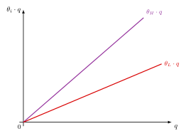
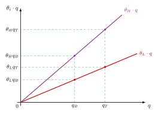
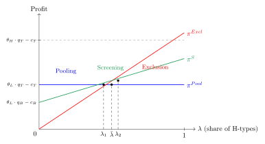
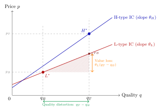
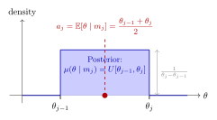
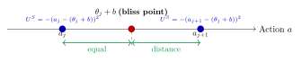
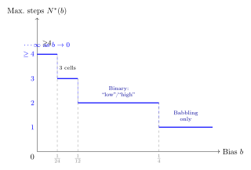
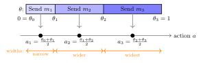
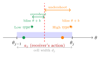
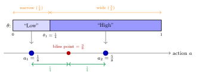

3 Applications of Game Theory
Throughout this book you have explored fundamental concepts in game theory and information economics, from basic Nash equilibrium to sophisticated signalling models. This chapter advances that understanding by examining how strategic interaction and game-theoretic thinking apply to complex real-world economic problems. The focus shifts from pure theory to applications, where strategic behaviour, private information and institutional design interact.
We study three pivotal applications that demonstrate the power and versatility of strategic thinking in economics. Each represents a different facet of how agents interact when information is asymmetric.
Mechanism design and monopoly screening. We begin with mechanism design, often called “reverse game theory”. Instead of taking the rules of a game as given, you design the rules to achieve a desired outcome. The focus is on monopoly screening problems, where a monopolist faces consumers with different willingness to pay but cannot directly observe these differences. The monopolist must design a menu of contracts, each a different price–quantity combination, that induces consumers to reveal their private information through their choices.
Cheap talk and communication games. We then examine cheap talk. Unlike signalling games, where messages are costly, cheap talk asks when communication via “cheap” statements can be informative in strategic settings. You will discover that even costless messages can sometimes convey credible information when interests are sufficiently aligned, and explore applications ranging from central bank communication to political debates and expert advice.
Moral hazard problems. Finally, we turn to moral hazard, which arises when one party’s actions cannot be observed by another after a contract is signed. For example, once an employee is hired, the employer cannot perfectly monitor effort levels; once insurance is purchased, the insurer cannot observe how carefully the policyholder behaves. We explore how contracts can be designed to mitigate moral hazard through incentive structures, examining both the theoretical foundations and the practical solutions used in labour markets, insurance, and corporate governance.
Each application takes a different aspect of strategic interaction under asymmetric information: mechanism design the institutional arrangement, cheap talk the content of a message, moral hazard the hidden action. Between them they cover most of the ways in which private information constrains what parties can agree to.
The unifying theme across all three applications is the role of information asymmetries in shaping economic outcomes. Whether dealing with unobservable effort, hidden types, private signals, or strategic communication, you will see how game-theoretic analysis can both explain observed behaviour and suggest improvements to existing institutions and policies.
3.1 Monopolistic Screening
3.1.1 Screening under Monopoly and Competition
Private information is a pervasive feature of economic life. Agents know things about themselves, such as their health, their risk appetite, or their willingness to pay, that other parties cannot directly observe. The economic consequences of this asymmetry depend on the market structure in which it operates, and on who holds the informational advantage. Together, these two dimensions determine both the nature of the contracting problem and the form of the equilibrium response.
In the insurance market analysed in the previous chapter, following the framework of Rothschild and Stiglitz (1976), the information asymmetry runs from buyer to seller: the insured party knows her accident probability, and the insurer does not. The market is competitive, so insurers earn zero profits in equilibrium and cannot sustain cross-subsidies. The equilibrium, when it exists, is a separating equilibrium: high-risk types obtain full insurance at an actuarially fair premium, while low-risk types accept partial insurance in exchange for a lower premium that is still fair. The distortion falls on the low-type contract, and the mechanism that enforces separation is self-selection. The market allocation reveals each agent’s type through their choices.
This chapter analyses a similar but distinct problem. A monopolist sells a good with different quality versions. Consumers again differ in an unobservable characteristic, here their valuation for quality. The information asymmetry runs in the same direction, but the market structure is different: there is a single seller with market power. The monopolist does not compete for rents; it extracts them. That changes the nature of the equilibrium.
3.1.1.1 The common structure of screening problems
In any screening environment, the uninformed party (the principal) designs a menu of contracts to offer the informed party (the agent). The menu must satisfy two classes of constraints:
- Participation constraints (IR): each type must weakly prefer accepting some contract on the menu to the outside option, whether that is walking away, self-insuring, or not purchasing.
- Incentive compatibility constraints (IC): each type must weakly prefer the contract designed for it over any other contract on the menu. The agent must have no incentive to misrepresent her type.
The single-crossing condition, under which higher types value quality or coverage more at the margin, is what makes separation possible in both environments.
3.1.1.3 Objectives and constraints
The two settings also differ in what the principal is trying to achieve.
- Under perfect competition (Rothschild–Stiglitz), firms cannot make a profit. Insurers break even on each contract type in a separating equilibrium. The equilibrium is not chosen by any single agent to maximise an objective; it is the outcome of a Nash equilibrium among competing firms. The low-risk type is made worse off to prevent the high-risk type from mimicking her.
- Under monopoly, the principal is a single profit-maximising firm that is able to maintain positive profit. The monopolist chooses the menu to maximise profit subject to participation (IR) and incentive compatibility (IC) constraints. The binding distortion again falls on the low-type allocation, but for a different reason, which you will examine shortly.
Both models illustrate the tension between efficiency and information revelation. What changes is that monopoly power transforms screening from a defensive response to adverse selection into an offensive tool for surplus extraction.
3.1.2 Damaged Goods: Degrading a Product to Screen Consumers
To explore monopolistic screening, we work through a case study in which the monopolist deliberately introduces an inferior version of its product. The degradation is not a cost-saving measure but a screening device. The damaged good may even be more costly to produce than the original, since degradation requires active engineering effort. Its sole purpose is informational: it makes the premium product credibly more attractive to high-valuation buyers, enabling the firm to extract greater surplus from them.
The damaged goods phenomenon is not confined to theory. Three cases in which a firm paid to make its own product worse:
Intel 486SX (1991). The 486DX was Intel’s flagship processor. Intel created the 486SX by taking a fully functional 486DX off the production line and physically disabling the floating-point unit. Disabling the unit required an extra manufacturing step, so the budget chip was more costly to produce than the premium one.
IBM LaserPrinter Series E. IBM sold the LaserPrinter Series E alongside the standard LaserPrinter at a lower price and half the speed. Teardowns revealed identical hardware in both. The Series E firmware contained wait states inserted by engineers to slow printing from ten pages per minute to five. IBM paid to make its printer worse.
Adobe Acrobat Standard and Pro. Both editions share the same codebase. The Standard edition is produced by locking features behind licence checks, and writing, testing, and maintaining this gating logic costs real engineering resources.
In each case the inferior product is not cheaper to make. Its role is to enforce separation between consumer types, giving the firm the ability to charge high-valuation consumers more.
We develop the theory in a discrete two-type setting, deriving the optimal menu first under full information and then under asymmetric information. This will show that the damaged good emerges endogenously as the profit-maximising response to adverse selection.
3.1.3 The Model
The model has four components: the consumers, the monopolist, the assumptions that constrain the firm’s choices, and the order in which decisions are made.
3.1.3.1 Consumer types
The market is populated by two types of consumers, differentiated according to their valuation of quality.
| Type | Proportion | Valuation per unit quality | Ordering |
|---|---|---|---|
| High (\(H\)) | \(\lambda \in (0,1)\) | \(\theta_H\) | \(\theta_H > \theta_L > 0\) |
| Low (\(L\)) | \(1 - \lambda\) | \(\theta_L\) |
Each consumer demands at most one unit. A type-\(i\) consumer’s utility from purchasing a good of quality \(q\) at price \(p\) is given by the quasi-linear specification
\[ U_i(q, p) \;=\; \theta_i \cdot q \;-\; p, \qquad i \in \{H, L\}. \]
The outside option, not purchasing, yields utility \(U_i = 0\).

3.1.3.2 The monopolist
The monopolist can produce two versions of the good:
- An original good (top quality), \(q = q_T\), produced at constant marginal cost \(c_T \geq 0\).
- A damaged good (low quality), \(q = q_B\) with \(q_B < q_T\), produced at constant marginal cost \(c_B\).
Information structure. Nature draws each consumer’s type according to the prior \((\lambda, 1-\lambda)\). The monopolist knows this distribution but cannot identify which individual consumers are high value and which are low value.
This is the informational asymmetry that drives the entire analysis. The monopolist knows that a proportion \(\lambda\) of the market values quality highly, but cannot tell who they are when a consumer walks through the door.

3.1.3.3 Assumptions
Two assumptions complete the model.
Assumption 1: cost of damage. The damaged good costs weakly more to produce than the original:
\[ c_B \;\geq\; c_T \]
This rules out any cost-saving motive for introducing the damaged good and establishes that the only rationale for product degradation is informational. When the condition holds strictly, so that \(c_B > c_T\), the monopolist is spending real resources to make its product worse. The additional expenditure \(c_B - c_T\) might represent the engineering cost of disabling features, testing the degraded version for stability, or manufacturing a speed-limiting chip.
Assumption 2: market coverage. It is socially efficient to serve both types with the original good:
\[ \theta_L \cdot q_T \;\geq\; c_T \]
Taken together, the two assumptions imply that it is never efficient to serve the low-valuation type with the damaged good. Damaged goods cost at least as much to produce, and serving \(L\)-types with the original good is already efficient, so there is no cost-saving or efficiency rationale for providing a degraded product.
Any degradation you observe in equilibrium is therefore driven entirely by the screening motive, not by production economics.
3.1.3.4 Timing
The game proceeds in three stages:
- Stage 1: Nature draws each consumer’s type.
- Stage 2: The monopolist posts a menu of quality–price pairs \(\{(q_k, p_k)\}_{k}\).
- Stage 3: Each consumer observes the menu and selects the option, including non-purchase, that maximises utility.
Note that the monopolist commits to the full menu before any consumer chooses. It cannot observe a consumer’s choice and then adjust the terms.
3.1.4 Benchmark: First-Best under Perfect Information
Before analysing what happens when types are hidden, it helps to establish a benchmark. Suppose the monopolist can observe each consumer’s type and offer personalised bundles.
3.1.4.1 Optimal quality
Under full information, the monopolist has no informational reason to distort quality. The original good has quality \(q_T > q_B\) and costs weakly less (\(c_T \leq c_B\)), so both types should receive the original good.
Formally, for each type \(i\):
\[ \theta_i \cdot q_T - c_T \;\geq\; \theta_i \cdot q_B - c_B \Rightarrow \underbrace{\theta_i(q_T - q_B)}_{>0} + \underbrace{(c_B - c_T)}_{\geq 0} > 0 \]
Both terms on the right are non-negative, and the first is strictly positive, so serving either type with the original good always dominates serving them with the damaged good.
3.1.4.2 Optimal prices
The monopolist extracts the entire consumer surplus from each type by charging a price equal to their maximum willingness to pay, \(\theta_i \cdot q_T\):
\[ p_H^{*} = \theta_H \cdot q_T, \qquad p_L^{*} = \theta_L \cdot q_T \]
Because types are observable, there is nothing to stop the monopolist charging each consumer exactly what the good is worth to them. Each type is left with zero surplus.
3.1.4.3 First-best profit
Serving both types with the original good, the monopolist earns
\[ \pi^{FB} \;=\; \lambda\bigl(\theta_H \cdot q_T - c_T\bigr) \;+\; (1-\lambda)\bigl(\theta_L \cdot q_T - c_T\bigr) \]
This is the maximum profit achievable in this market. Everything that follows will be measured against it.
3.1.5 The Screening Problem under Asymmetric Information
Now suppose the monopolist cannot observe types. It knows the distribution \((\lambda, 1-\lambda)\) and the valuations \(\theta_H\) and \(\theta_L\), but when a consumer walks through the door, the firm has no way to tell whether it is facing an \(H\)-type or an \(L\)-type.
The natural starting point is to ask whether the first-best menu still works. It does not.
The first attempt. Suppose the monopolist offers the first-best menu unchanged:
\[ \{(q_T,\; \theta_H \cdot q_T),\; (q_T,\; \theta_L \cdot q_T)\} \]
Both contracts offer the same quality \(q_T\), and differ only in price: the \(H\)-type contract charges more. Nothing prevents an \(H\)-type from picking the cheaper contract instead.
What an \(H\)-type gains by deviating. If the \(H\)-type takes the contract intended for her:
\[ U_H(q_T, \theta_H \cdot q_T) = \theta_H \cdot q_T - \theta_H \cdot q_T = 0. \]
If she takes the \(L\)-type contract instead:
\[ U_H(q_T, \theta_L \cdot q_T) = \theta_H \cdot q_T - \theta_L \cdot q_T = (\theta_H - \theta_L)\cdot q_T > 0. \]
Since \((\theta_H - \theta_L)\cdot q_T > 0\), every \(H\)-type strictly prefers the \(L\)-type’s contract.
The menu unravels. All consumers pool on the cheap contract, and the monopolist collects only \(\theta_L \cdot q_T\) per unit sold. This is precisely the low-price, single-product outcome the menu was meant to improve on.
The root cause is simple. When both contracts offer the same quality, an \(H\)-type can obtain the same good at a lower price by pretending to be an \(L\)-type. The firm has given \(H\)-types no reason to self-select into the expensive contract. The first-best menu is not incentive compatible.
3.1.5.1 The monopolist’s response
To prevent mimicry, the monopolist designs two products and sells them at two different prices:
- Contract \(H\): quality \(q_T\), the original good, at price \(p_T\).
- Contract \(L\): quality \(q_B\), the damaged good, at price \(p_B\).
The products are designed so that high-value consumers purchase the top-quality product at a higher price, while low-value consumers purchase the base-quality product at a lower price.
The monopolist maximises expected profit:
\[ \max_{q_B,\, p_T,\, p_B} \quad \pi \;=\; \lambda\bigl(p_T - c_T \bigr) \;+\; (1-\lambda)\bigl(p_B - c_B\bigr) \]
subject to four constraints:
\[ \begin{aligned} \theta_H \cdot q_T - p_T \;&\geq\; 0 &&\text{(IR-H)}\\[4pt] \theta_L \cdot q_B - p_B \;&\geq\; 0 &&\text{(IR-L)}\\[4pt] \theta_H \cdot q_T - p_T \;&\geq\; \theta_H \cdot q_B - p_B &&\text{(IC-H)}\\[4pt] \theta_L \cdot q_B - p_B \;&\geq\; \theta_L \cdot q_T - p_T &&\text{(IC-L)} \end{aligned} \]
Individual rationality. The individual rationality constraints ensure that consumers receive non-negative utility from the product designed for their type. Each consumer must prefer participating to opting out. (IR-H) requires that the high type earns non-negative utility from the top-quality contract; (IR-L) requires the same of the low type and the base-quality contract. Without these, a consumer would simply walk away.
Incentive compatibility. The incentive compatibility constraints ensure that each consumer truthfully selects the contract intended for their type rather than mimicking the other type. (IC-H) ensures that high-value consumers prefer the top-quality product at the high price over the base-quality product at the low price. (IC-L) ensures that low-value consumers prefer the base-quality product at the low price over the top-quality product at the high price. Without these, the uninformed monopolist faces the risk that high-value consumers will pretend to be low-value in order to capture surplus, which is exactly what happened to the first-best menu.
Together, individual rationality guarantees voluntary participation and incentive compatibility guarantees truthful self-selection. These are the two pillars of any screening problem, and you met them both in the competitive insurance model in the previous chapter.
3.1.5.2 Which constraints bind?
We now apply the standard methodology from screening theory: identify which constraints bind at the optimum, substitute, and reduce the dimensionality of the problem.
Claim 1: (IR-L) binds at the optimum. Suppose (IR-L) is slack: \(\theta_L \cdot q_B - p_B > 0\). Then the monopolist can raise \(p_B\) by a small \(\varepsilon > 0\). This directly increases profit. It relaxes (IC-H) (raising \(p_B\) makes Bundle \(B\) less attractive to the high type). It tightens (IC-L), but the constraint remains satisfied for sufficiently small \(\varepsilon\) since it was slack or binding. This contradicts the optimality of the original menu.
Claim 2: if (IC-H) and (IR-L) hold, then (IR-H) holds automatically. The \(H\)-type’s participation constraint (IR-H) requires \(\theta_H \cdot q_T - p_T \geq 0\), that is, the \(H\)-type must earn non-negative utility from her intended contract. But this is guaranteed whenever two other constraints hold.
(IC-H) says the \(H\)-type weakly prefers her own contract to the \(L\)-type’s contract, so her utility is at least as high as that she would get by deviating to the \(L\)-type contract: \(\theta_H \cdot q_T - p_T \geq \theta_H \cdot q_B - p_B\). And (IR-L) says the \(L\)-type earns non-negative utility, which means \(p_B \leq \theta_L \cdot q_B\).
Substituting this price bound into the (IC-H) inequality, the \(H\)-type’s utility is at least \(\theta_H \cdot q_B - \theta_L \cdot q_B = (\theta_H - \theta_L)\cdot q_B\), which is strictly positive since \(\theta_H > \theta_L\) and \(q_B > 0\).
In words: the \(H\)-type could always “pretend” to be an \(L\)-type and still earn positive surplus (because she values quality more), so she certainly earns positive surplus from the contract designed for her.
Claim 3: (IC-H) binds at the optimum. Suppose (IC-H) is slack. Then the monopolist can raise \(p_T\) by a small \(\varepsilon > 0\), directly increasing profit. (IR-H) remains satisfied by Claim 2 above. (IC-L) is relaxed (raising \(p_T\) makes Bundle \(T\) less attractive to the low type). This contradicts optimality.
3.1.5.3 Solving for prices and profit
From the binding constraints, we express prices in terms of qualities. From (IR-L) binding:
\[ p_B \;=\; \theta_L \cdot q_B \]
From (IC-H) binding:
\[ p_T \;=\; \theta_H \cdot q_T - (\theta_H - \theta_L)\cdot q_B \]
Observe the structure of the high-type price: it equals the full-information price \(\theta_H \cdot q_T\) minus a discount of \((\theta_H - \theta_L)\cdot q_B\). This discount is the informational rent that the high type extracts because the monopolist cannot verify her type.
Note that the rent is increasing in \(q_B\): a higher-quality damaged good makes mimicry more tempting, so the high type must be compensated more.
Substituting these two expressions into the profit function, the monopolist’s optimal profit under screening is
\[ \pi^{S} \;=\; \lambda\bigl[\theta_H \cdot q_T - (\theta_H - \theta_L)\cdot q_B - c_T \bigr] \;+\; (1-\lambda)\bigl[\theta_L \cdot q_B - c_B\bigr] \]
The problem is now a function of \(q_B\) alone. Notice that \(\pi^{S}\) is linear in \(q_B\), with slope
\[ \frac{\partial \pi^{S}}{\partial q_{B}} \;=\; -\lambda\bigl(\theta_{H} - \theta_{L}\bigr) + (1 - \lambda)\,\theta_{L} \]
There is therefore no interior optimum. Depending on the sign of that slope, the monopolist would push \(q_B\) all the way down to zero or all the way up to \(q_T\) — and those two corners are precisely the exclusion and pooling outcomes analysed next. What makes screening a distinct strategy in practice is that \(q_B\) is fixed by technology: a chip either has its floating-point unit disabled or it does not. The analysis that follows therefore treats \(q_B\) as given and asks whether offering the damaged good at all is profitable.
3.1.5.4 Three market regimes
Assuming the damaged good’s quality \(q_B\) is determined exogenously, the monopolist compares the profit from three feasible strategies.
Regime 1: separating menu. The monopolist offers both contracts:
\[ \text{Contract } H: \bigl(q_T,\; p_T = \theta_H \cdot q_T - (\theta_H - \theta_L)\cdot q_B\bigr) \]
\[ \text{Contract } L: \bigl(q_B,\; p_B = \theta_L \cdot q_B\bigr) \]
yielding
\[ \pi^{S} = \lambda\bigl[\theta_H \cdot q_T - (\theta_H - \theta_L)\cdot q_B - c_T\bigr] + (1-\lambda)\bigl[\theta_L \cdot q_B - c_B\bigr] \]
Regime 2: exclusion of the low type. Rather than designing a menu or cutting the price to accommodate \(L\)-types, the monopolist can simply ignore them. It offers only the original good \(q_T\) and sets the price at the \(H\)-type’s full willingness to pay:
\[ p = \theta_H \cdot q_T \]
At this price, \(H\)-types earn zero surplus and buy the good. \(L\)-types cannot afford it, since \(\theta_L \cdot q_T - \theta_H \cdot q_T = (\theta_L - \theta_H)\cdot q_T < 0\) violates their IR constraint, so they walk away. The monopolist therefore extracts the entire \(H\)-type surplus but earns nothing from \(L\)-types:
\[ \pi^{Excl} = \lambda\bigl(\theta_H \cdot q_T - c_T\bigr) \]
Regime 3: pooling on the high-quality good. Instead of offering a menu, the monopolist sells only the original good \(q_T\) at a single price. There are only two candidate prices, \(\theta_H \cdot q_T\) and \(\theta_L \cdot q_T\), because any price between them still excludes \(L\)-types without extracting the \(H\)-types’ full surplus.
- At \(\theta_H \cdot q_T\), only \(H\)-types buy and \(L\)-types are excluded. This is exactly Regime 2, so it is already covered.
- At \(\theta_L \cdot q_T\), both types can afford the good. \(L\)-types earn zero surplus, as their IR constraint binds, and \(H\)-types earn positive surplus of \((\theta_H - \theta_L)\cdot q_T\). The monopolist sacrifices the ability to extract \(H\)-types fully, but in return serves the entire market.
The pooling regime therefore sets \(p = \theta_L \cdot q_T\) and earns
\[ \pi^{Pool} = \theta_L \cdot q_T - c_T \]
Notice that pooling profit is independent of \(\lambda\). The monopolist earns the same margin on every unit sold, and it sells to every consumer regardless of type. This makes pooling attractive when \(H\)-types are rare: there is little to gain from charging a premium, so sweeping the whole market at a low price dominates.
Exclusion profit, by contrast, rises linearly in \(\lambda\). The more \(H\)-types in the population, the more attractive this strategy becomes. Exclusion is optimal when \(H\)-types are sufficiently numerous that the margin gained by charging them their full valuation outweighs the revenue lost from abandoning the \(L\)-type segment entirely.
The monopolist selects whichever strategy yields the highest profit:
\[ \max\{\pi^{S},\; \pi^{Pool},\; \pi^{Excl}\} \]
3.1.6 When Is Introducing the Damaged Good Profitable?
The monopolist will only introduce the damaged good if screening beats both alternatives. That requires two comparisons: screening against pooling, and screening against exclusion.
3.1.6.1 Separating versus pooling
The separating menu is optimal compared to pooling on both types if \(\pi^{S} \geq \pi^{Pool}\). After simplification, this requires
\[ \lambda \;\geq\; \frac{\theta_L(q_T - q_B) + c_B - c_T}{\theta_H(q_T - q_B) + c_B - c_T} \]
The numerator is the social cost of degradation when serving an \(L\)-type: the value lost from reduced quality, \(\theta_L(q_T - q_B)\), plus the extra production cost, \(c_B - c_T\). The denominator is the analogous cost for an \(H\)-type, which is larger since \(\theta_H > \theta_L\).
Screening is optimal rather than pooling when the share of \(H\)-types is sufficiently large that the gains from price discrimination outweigh the costs of quality distortion.
3.1.6.2 Separating versus exclusion
The separating menu is optimal compared to the exclusion menu when \(\pi^{S} \geq \pi^{Excl}\), which reduces to
\[ \lambda \;\leq\; \frac{\theta_L q_B - c_B}{\theta_H q_B - c_B} \]
The numerator is the net surplus generated by serving an \(L\)-type with the damaged good: the value \(\theta_L q_B\) minus the production cost \(c_B\). The denominator is the analogous quantity for an \(H\)-type.
When the share of \(H\)-types exceeds this threshold, the gain from charging them full price \(\theta_H \cdot q_T\) under exclusion outweighs the benefit of serving \(L\)-types with the damaged good. Screening dominates exclusion when there are sufficiently many \(L\)-types to make the low-margin damaged-good sales worthwhile.
3.1.6.3 The screening window
Each comparison gives one bound on \(\lambda\). Screening is more profitable than pooling when the share of \(H\)-types is sufficiently large, and more profitable than exclusion when that share is sufficiently small. Combining the two conditions identifies exactly when the separating menu is optimal:
\[ \frac{\theta_L(q_T - q_B) + c_B - c_T}{\theta_H(q_T - q_B) + c_B - c_T} \;\leq\; \lambda \;\leq\; \frac{\theta_L q_B - c_B}{\theta_H q_B - c_B} \]
The damaged good is therefore a middle-ground strategy. It is optimal only when the share of high-value consumers is neither too small, in which case pooling is more profitable, nor too large, in which case excluding low-value consumers is preferable.

Proof of the screening window. The proof runs in both directions, verifying that the separating menu is optimal if and only if the two inequalities defining the screening window hold, with \(\lambda \in (0,1)\).
Sufficiency. Suppose both inequalities hold.
- The left inequality is equivalent to \(\pi^{S} \geq \pi^{Pool}\), by the separating versus pooling condition.
- The right inequality is equivalent to \(\pi^{S} \geq \pi^{Excl}\), by the separating versus exclusion condition.
Hence \(\pi^{S} \geq \max\{\pi^{Pool}, \pi^{Excl}\}\), so the separating menu is optimal.
Necessity. Take the contrapositive: if either inequality fails, then screening is not optimal.
- Case 1. Suppose \(\lambda \leq \dfrac{\theta_L(q_T - q_B) + c_B - c_T}{\theta_H(q_T - q_B) + c_B - c_T}\). Rearranging and applying the separating versus pooling condition gives \(\pi^{Pool} \geq \pi^{S}\). Pooling weakly dominates screening, contradicting the optimality of the separating menu.
- Case 2. Suppose \(\lambda \geq \dfrac{\theta_L q_B - c_B}{\theta_H q_B - c_B}\). Rearranging and applying the separating versus exclusion condition gives \(\pi^{Excl} \geq \pi^{S}\). Exclusion weakly dominates screening, again contradicting the optimality of the separating menu.
In either case, screening fails to be strictly optimal. Both inequalities must therefore hold for the separating menu to be optimal, and both must hold strictly for it to be uniquely optimal.
3.1.6.4 The role of the damage cost
One parameter deserves particular attention: the cost of producing the damaged good.
Proposition 1 (impact of \(c_B\))
Higher damage cost \(c_B\) makes the separating menu less attractive relative to both pooling and exclusion. In the limit as \(c_B \to \infty\), the damaged good is never offered.
Reading the regime figure:
- Pooling: flat in \(\lambda\). \(\pi^{Pool} = \theta_L \cdot q_T - c_T\). Pooling serves everyone at the low-type price, so profit is independent of the type mix. This makes it attractive when \(H\)-types are rare.
- Exclusion: rises linearly through the origin. \(\pi^{Excl} = \lambda(\theta_H \cdot q_T - c_T)\). The more \(H\)-types in the market, the higher the revenue from selling only to them at full price. At \(\lambda = 0\) there are no \(H\)-types to sell to, so profit is zero.
- Screening: rises, but less steeply. Screening intercepts the vertical axis at \(\theta_L \cdot q_B - c_B\), the stand-alone profit from selling the damaged good to \(L\)-types at \(\lambda = 0\). It rises with slope \(\theta_H(q_T - q_B) + c_B - c_T\), which is positive but smaller than the slope of \(\pi^{Excl}\). Each additional \(H\)-type brings revenue \(\theta_H \cdot q_T - c_T\), but also an information-rent cost of \((\theta_H - \theta_L)\cdot q_B\).
- Two critical thresholds. The three lines cross at \(\lambda_1\) and \(\lambda_2\), dividing the market into three regions: for \(\lambda < \lambda_1\), pooling is optimal; for \(\lambda_1 < \lambda < \lambda_2\), the screening menu outperforms both extremes; for \(\lambda > \lambda_2\), exclusion becomes optimal. These are the same two bounds established above.
3.1.7 Welfare Analysis
Screening solves the monopolist’s problem, but at a cost to society. This section asks who gains, who loses, and how much total surplus is destroyed along the way.
3.1.7.1 Consumer surplus
Under the separating menu, the two types fare very differently.
- High type: earns informational rent \(U_H = (\theta_H - \theta_L)\cdot q_B > 0\), which is increasing in \(q_B\).
- Low type: earns zero surplus, \(U_L = 0\), because the participation constraint binds.
The high type captures a rent precisely because the monopolist cannot verify her type. The low type, whose type is not worth mimicking, is left with nothing.
3.1.7.2 Deadweight loss
Compared to the first-best, two sources of inefficiency arise. The low type receives a damaged good, \(q_B < q_T\), even though producing the original is weakly cheaper. The per-consumer welfare loss is
\[ \text{DWL} \;=\; \theta_L\,(q_T - q_B) \;+\; (c_B - c_T). \]

Reading the figure:
- No distortion at the top. The \(H\)-type receives the efficient quality \(q_T\) at contract \(H^*\). This is the standard “no distortion at the top” result: the highest type always gets the allocation they would receive under full information. What the monopolist cannot do is charge the full-information price. The \(H\)-type keeps her informational rent.
- Distortion at the bottom. The \(L\)-type is offered a degraded product at quality \(q_B < q_T\) at contract \(L^*\), even though serving her at \(q_T\) would be efficient. Point \(L^{FB}\) marks that efficient contract on the same indifference curve. The monopolist distorts the \(L\)-type’s quality downward to reduce the informational rent it must concede to \(H\)-types.
- The deadweight loss. The shaded triangle represents the welfare loss from degradation. The vertical distance \(\theta_L(q_T - q_B)\) is the value the \(L\)-type gives up by consuming lower quality. An additional welfare loss, not shown on the graph, arises whenever \(c_B > c_T\): the firm spends real resources to produce an inferior product.
- Why separation is possible. The \(H\)-type’s indifference curve is steeper than the \(L\)-type’s, reflecting her higher marginal valuation of quality, \(\theta_H > \theta_L\). This single-crossing property is what makes separation possible. Because the two curves cross only once, a contract that is attractive to one type can be made unattractive to the other.
The paradox of costly degradation
The monopolist spends real resources, \(c_B - c_T \geq 0\), to make its product worse. This is socially wasteful, since the same expenditure could improve the product or reduce prices. Yet the monopolist’s private incentive to screen is so powerful that it willingly incurs the cost.
The damaged good destroys value in order to appropriate value. It is a rent-extraction device disguised as a product.
3.1.7.3 Policy implications
Should regulators prohibit firms from deliberately degrading products? The welfare calculus is ambiguous.
On one hand, damaged goods create deadweight loss: real resources are spent making a product worse, and the low type ends up consuming a quality below the efficient level.
On the other, a prohibition does not restore the first best. It simply deletes one option from the monopolist’s menu, leaving the two corners of the previous section, and which one the firm jumps to decides the welfare verdict. If it pools at \(\theta_L \cdot q_T\), every consumer receives the efficient quality and total surplus rises. If instead it excludes, trade with the low type disappears altogether and the surplus \(\theta_L \cdot q_B - c_B\) is destroyed.
It is worth being careful about who gains and loses here, because the intuitive answer is wrong. Since (IR-L) binds in every regime, the low type earns zero surplus whether they buy the damaged good or walk away: the entire gain from trading with them is captured by the firm. So a prohibition that triggers exclusion does not harm the low type in utility terms at all — it leaves them exactly as they were. The parties it makes worse off are the monopolist, which loses the option it would have preferred, and the high type, who is now charged \(\theta_H \cdot q_T\) and surrenders the informational rent \((\theta_H - \theta_L)\cdot q_B\) that the damaged good had conferred.
The outcome is therefore Pareto-inferior, but not for the reason one might expect, and not at the expense of the consumer the policy was meant to protect. The optimal policy depends on specific market parameters, on which corner the monopolist retreats to, and on the regulator’s own informational constraints.
3.1.7.4 Rent extraction versus market coverage
The fundamental tension in the model is between rent extraction and market coverage.
The monopolist’s inability to distinguish types generates an informational externality: every unit of quality conferred on the low type creates a claim by the high type to a price discount of \(\theta_H - \theta_L\) per unit.
Degrading the low-type product is a rational attempt to minimise this externality, at the cost of social efficiency.
3.1.8 Comparing Monopoly and Competition
The damaged-goods model of monopolistic screening shares deep structural similarities with the competitive insurance market analysed in the previous chapter, yet the two settings generate strikingly different equilibrium outcomes. Comparing them illuminates how market structure shapes the nature of informational distortions.
3.1.8.1 Common structure
Both problems feature an uninformed principal, the seller or insurer, facing agents, the buyers or insureds, who hold private information about a payoff-relevant characteristic. In both cases the principal designs a menu of contracts, and equilibrium requires:
- Incentive compatibility, so that each type self-selects.
- Individual rationality, so that each type participates voluntarily.
The single-crossing condition, under which higher types value quality or coverage more at the margin, enables separation in both environments.
3.1.8.2 Who bears the distortion?
Superficially the two settings look alike: in each, the low type’s allocation is distorted downward, while the type whose incentive constraint binds receives an undistorted allocation — the familiar “no distortion at the top” result. The resemblance is misleading. The low type occupies opposite economic positions in the two markets, and the distortion serves opposite purposes.
- In competitive insurance, the low type is the low-risk consumer, who could be fully insured at an actuarially fair premium. The high-risk type’s incentive constraint binds, and the zero-profit condition precludes any cross-subsidy capable of sustaining the low-risk contract once it is mimicked. Coverage must therefore be withdrawn until the high-risk type is indifferent. The distortion is imposed on insurers by competition: a constraint, not a choice.
- In monopolistic screening, the low type is the low-valuation consumer, from whom the firm earns little and to whom quality is expensive to supply — each unit conceded raises the high type’s informational rent by \(\theta_H - \theta_L\). Here (IC-H) binds, and the monopolist degrades \(q_B\) precisely to suppress that rent. Profit being linear in \(q_B\), no interior optimum exists. The distortion is chosen, and chosen in order to extract surplus.
Note that the same consumer does the mimicking in both markets: the one who values coverage or quality more at the margin, exactly as single crossing implies. The difference is what the principal stands to lose if that consumer succeeds — an insurer would be writing a policy that cannot break even, whereas a monopolist would be surrendering a premium it is otherwise able to charge. One distortion averts a loss the market cannot fund; the other protects a rent.
3.1.8.3 Why the distortion arises
The economic logic differs fundamentally between the two settings.
- Competitive insurance: Distortion arises from cross-subsidisation constraints. If low-risk types received full coverage at an actuarially fair premium, high-risk types would mimic them, causing losses. With zero profits required on each contract, insurers cannot compensate by overcharging high-risk types. The low-risk contract must therefore be distorted to break the mimicry incentive.
- Monopolistic screening: Distortion arises from rent extraction. The monopolist could serve all consumers efficiently, but doing so would require pooling at a low price. By degrading the low-type product, the monopolist makes the high-type contract relatively more attractive and can charge a premium. The distortion is a deliberate choice to enhance price discrimination, not a competitive necessity.
3.1.8.4 Welfare implications
Under competition, zero profits make consumers the residual claimants: the entire welfare loss falls on low-risk consumers, as under-insurance.
Under monopoly the incidence is reversed. Measured against full information, where both types receive \(q_T\):
- The low type is unaffected: (IR-L) binds in both regimes, so their surplus is zero in each.
- The high type strictly gains the rent \((\theta_H - \theta_L)\cdot q_B\) — a transfer, not a loss.
- The monopolist bears everything: that rent, plus the social cost of degradation \(\theta_L(q_T - q_B) + c_B - c_T\) per low type served.
The loss is therefore not shared: competition places the cost of private information on an informed party, monopoly on the uninformed one.
The monopolist may also choose to exclude low types entirely, an option unavailable to competitive insurers, who cannot coordinate on market exit.
3.1.9 Worked Example: Screening with a Damaged Chip
This example applies the full screening framework to the Intel 486SX processor.
Setup
A monopolist produces processors. It has two versions:
- Original (quality \(q_H = 2\)): the full-featured chip, marginal cost \(c = 0\).
- Damaged (quality \(q_L = 1\)): the chip with the FPU disabled, marginal cost \(c_D = 1\). The disabling step costs more than producing the original.
There are two consumer types:
| Type | Proportion | Valuation per unit quality | Utility from \((q,p)\) |
|---|---|---|---|
| High (\(H\)) | \(\lambda = 0.4\) | \(\theta_H = 4\) | \(4q - p\) |
| Low (\(L\)) | \(1-\lambda = 0.6\) | \(\theta_L = 2\) | \(2q - p\) |
Types are private information. The outside option gives zero utility.
3.1.9.1 The first-best benchmark
Since the monopolist can verify each consumer’s type, it offers two separate contracts, one for each type, and sets prices equal to the consumer’s maximum willingness to pay. Each type earns zero surplus.
Optimal quality. Both types receive the original good \(q_H = 2\). Serving either type with the damaged good would be inefficient, since the original costs less (\(c = 0 < c_D = 1\)) and delivers higher quality (\(q_H > q_L\)). The damaged good has zero value under full information.
Optimal prices. The monopolist extracts the full surplus from each type:
\[ p_H^{FB} = \theta_H \cdot q_H = 4 \times 2 = 8, \qquad p_L^{FB} = \theta_L \cdot q_H = 2 \times 2 = 4. \]
First-best profit:
\[ \pi^{FB} = \underbrace{\lambda\,(p_H^{FB} - c)}_{\text{profit from } H\text{-types}} + \underbrace{(1-\lambda)\,(p_L^{FB} - c)}_{\text{profit from } L\text{-types}} = 0.4 \times 8 + 0.6 \times 4 = 3.2 + 2.4 = 5.6 \]
All consumer surplus is extracted. This is the efficiency frontier: the monopolist captures the full social surplus.
3.1.9.4 Comparing the three strategies
Strategy 1: separating menu. As derived above,
\[ \pi^S = 0.4 \times 6 + 0.6 \times 1 = 3.0 \]
Strategy 2: pooling on the original good. Set \(p = \theta_L \cdot q_H = 4\), so both types purchase the original chip:
\[ \pi^{Pool} = p - c = 4 - 0 = 4.0 \]
\(H\)-types earn surplus \((\theta_H - \theta_L)\cdot q_H = 4\), which the monopolist does not extract. It serves the whole market cheaply instead of screening.
Strategy 3: exclusion of \(L\)-types. Set \(p = \theta_H \cdot q_H = 8\), so only \(H\)-types purchase:
\[ \pi^{Excl} = \lambda(\theta_H \cdot q_H - c) = 0.4 \times 8 = 3.2 \]
\(L\)-types are priced out. The monopolist captures the full \(H\)-type surplus but abandons the \(L\)-type market.
| Strategy | Profit | \(H\)-type CS | \(L\)-type served? |
|---|---|---|---|
| Screening | \(3.0\) | \(2\) | Yes (damaged good) |
| Pooling | \(4.0\) | \(4\) | Yes (original) |
| Exclusion | \(3.2\) | \(0\) | No |
| First-best | 5.6 | \(0\) | Yes (original) |
\[ \max\{3.0,\; 4.0,\; 3.2\} = 4.0 \quad\Longrightarrow\quad \textbf{pooling dominates at } \lambda = 0.4. \]
Why does pooling win here? With only 40% \(H\)-types, the gain from price-discriminating the \(H\)-segment is limited. The price premium from screening (\(p_H = 6\) against pooling’s \(p = 4\)) applies to just 40% of consumers, netting \(0.4 \times 2 = 0.8\) in extra revenue. But the monopolist must also sell a costly damaged good to \(L\)-types at a thin margin of \(p_L - c_D = 1\), and it concedes an informational rent of \(0.8\). Pooling at \(p = 4\) is simpler and more profitable.
3.1.9.5 How the answer changes with the type mix
The three profit lines as functions of \(\lambda\):
\[ \pi^S(\lambda) = 6\lambda + 1(1-\lambda) = 5\lambda + 1, \qquad \pi^{Pool} = 4, \qquad \pi^{Excl}(\lambda) = 8\lambda. \]
The crossover points are:
- Pooling against exclusion: \(4 = 8\lambda \Rightarrow \lambda = 0.5\).
- Screening against pooling: \(5\lambda + 1 = 4 \Rightarrow \lambda = 0.6\).
- Screening against exclusion: \(5\lambda + 1 = 8\lambda \Rightarrow \lambda = 1/3 \approx 0.33\).
For \(\lambda < 0.5\), pooling beats exclusion. For \(\lambda > 0.5\), exclusion beats pooling. At no value of \(\lambda\) does screening simultaneously beat both alternatives.
This is not a coincidence. With \(c_D > c\), the damaged good is genuinely costly to produce, so the revenue from the \(L\)-segment under screening (\(p_L - c_D = 1\)) is low. The damaged goods strategy is optimal when the damage cost premium \(c_D - c\) is small relative to the informational rent it saves. That condition holds in some real markets, such as software where disabling features costs almost nothing, but not in hardware markets where physical degradation is expensive.
3.1.9.6 Measuring the welfare cost
Even though pooling dominates in this example, it is instructive to analyse the welfare costs of the screening menu. These represent the full cost the economy would bear if the firm chose to introduce the damaged good.
Total social surplus under screening:
\[ \begin{aligned} W^S &= \underbrace{\lambda\,(\theta_H \cdot q_H - c)}_{H\text{-type surplus net of cost}} + \underbrace{(1-\lambda)\,(\theta_L \cdot q_L - c_D)}_{L\text{-type surplus net of cost}} \\ &= 0.4 \times (8 - 0) + 0.6 \times (2 - 1) = 3.2 + 0.6 = 3.8 \end{aligned} \]
Total social surplus under the first-best:
\[ W^{FB} = 0.4 \times (8 - 0) + 0.6 \times (4 - 0) = 3.2 + 2.4 = 5.6 \]
Deadweight loss:
\[ \text{DWL} = W^{FB} - W^S = 5.6 - 3.8 = 1.8 \]
Two sources of deadweight loss:
- Consumer value destroyed by quality degradation. An \(L\)-type consumes \(q_L = 1\) instead of the efficient \(q_H = 2\), so the lost consumption value is \(\theta_L \cdot (q_H - q_L) = 2\) per \(L\)-type consumer.
- Resource waste from costly degradation. The damaged good costs \(c_D = 1\) to produce, while the original costs \(c = 0\), so the additional production cost is \(1\) per \(L\)-type consumer.
Total deadweight loss per \(L\)-type consumer is \(2 + 1 = 3\), and total DWL is \((1-\lambda) \times 3 = 0.6 \times 3 = 1.8\). ✓
Distribution of surplus:
| Agent | Under screening | Under first-best |
|---|---|---|
| \(H\)-type consumers (total) | \(0.8\) | \(0\) |
| \(L\)-type consumers (total) | \(0\) | \(0\) |
| Monopolist | \(3.0\) | \(5.6\) |
| Total welfare | 3.8 | 5.6 |
The paradox of costly degradation, in numbers
The monopolist spends \(c_D - c = 1\) per unit to make the chip worse. This expenditure:
- Generates zero consumer value, since the \(L\)-type would prefer the original.
- Enables the monopolist to charge \(p_H = 6\) instead of \(4\), recovering \(0.8\) from \(H\)-types through the reduced informational rent.
- Costs \((1-\lambda) \times (c_D - c) = 0.6\) in production expenses.
From society’s perspective, the monopolist spends \(0.6\) in real resources to appropriate \(0.8\) from consumers, destroying \(1.8\) in total welfare along the way.
Quick Check-In
Test your understanding of the screening material before moving on.
Question 1. The damaged goods model assumes \(c_B \geq c_T\). What is the purpose of this assumption?
- It ensures the damaged good is cheaper to supply, so degradation raises profit mechanically.
- It guarantees that the low type’s participation constraint binds at the optimum.
- It rules out any cost-saving motive, so the only rationale for degradation is informational.
- It ensures the single-crossing condition holds, which makes separation feasible.
Try again. The inequality runs the other way: the damaged good costs weakly more to produce. Assumption 1 deliberately removes any cost advantage from degradation.
Try again. (IR-L) binds because the monopolist would otherwise raise \(p_B\) and increase profit. That argument does not rely on the relative costs of the two versions.
Well done. With \(c_B \geq c_T\) the firm gains nothing on the production side by degrading its product. Any degradation observed in equilibrium must therefore be driven purely by the screening motive, which is exactly what makes the Intel 486SX and Adobe Acrobat cases instructive.
Try again. Single crossing follows from \(\theta_H > \theta_L\) in the utility specification \(U_i(q,p) = \theta_i q - p\), not from the cost assumption.
Question 2. Under the optimal separating menu, \(p_T = \theta_H q_T - (\theta_H - \theta_L)q_B\). What happens to the high type’s informational rent as \(q_B\) rises?
- The rent falls, because a better base product makes the top product less attractive.
- The rent rises, because mimicry becomes more attractive and the high type must be compensated more.
- The rent is unaffected, because (IC-H) binds regardless of \(q_B\).
- The rent rises only if \(c_B > c_T\).
Try again. The direction is reversed. Raising \(q_B\) makes mimicking the low type more tempting for the high type, so the rent must rise.
Well done. The rent is
\[ U_H = (\theta_H - \theta_L) q_B, \]
which is increasing in \(q_B\). A higher-quality damaged good is a more attractive deviation for the high type, so the monopolist must concede a larger discount to keep (IC-H) satisfied. This is precisely why the firm degrades the low-type product: distortion at the bottom buys back rent at the top.
Try again. (IC-H) binds at any \(q_B\), but the size of the rent it concedes depends on \(q_B\).
Try again. The rent \((\theta_H - \theta_L)q_B\) depends on valuations and quality alone. Costs affect the profitability of screening, not the size of the rent.
Question 3. A monopolist faces \(\theta_H = 4\), \(\theta_L = 2\), \(q_T = 2\), \(q_B = 1\) and \(c_B = 1\). Under the optimal separating menu, what price is charged for the top-quality good?
- \(p_T = 4\).
- \(p_T = 6\).
- \(p_T = 8\).
- \(p_T = 7\).
Try again. This is the pooling price \(\theta_L q_T\), at which both types buy the original good. It is not the top-quality price under a separating menu.
Well done. From (IR-L) binding, \(p_B = \theta_L q_B = 2\). From (IC-H) binding,
\[ \theta_H q_T - p_T = \theta_H q_B - p_B \;\Longrightarrow\; 8 - p_T = 4 - 2, \]
so \(p_T = 6\). Equivalently,
\[ p_T = \theta_H q_T - (\theta_H - \theta_L)q_B = 8 - 2 = 6, \]
leaving the high type an informational rent of \(2\).
Try again. This is the full-information price \(\theta_H q_T\). Charging it violates (IC-H): the high type would switch to the damaged good and earn a surplus of \(2\).
Try again. Recover prices from the two binding constraints, (IR-L) and (IC-H), rather than splitting the difference between the pooling and full-extraction prices.
Question 4. Why is the separating menu described as a ``middle-ground’’ strategy in \(\lambda\)?
- Pooling dominates when \(\lambda\) is small and exclusion dominates when \(\lambda\) is large.
- Screening profit is independent of \(\lambda\), so it is never the best or the worst option.
- Exclusion dominates when \(\lambda\) is small and pooling dominates when \(\lambda\) is large.
- The damaged good is optimal only when \(c_B = c_T\) exactly.
Well done. Pooling profit \(\pi^{Pool} = \theta_L q_T - c_T\) is flat in \(\lambda\), so sweeping the whole market at a low price wins when high types are rare. Exclusion profit \(\pi^{Excl} = \lambda(\theta_H q_T - c_T)\) rises steeply in \(\lambda\), so abandoning low types wins when high types are numerous. Screening is optimal only in the intermediate band
\[ \frac{\theta_L(q_T - q_B) + c_B - c_T}{\theta_H(q_T - q_B) + c_B - c_T} \;\leq\; \lambda \;\leq\; \frac{\theta_L q_B - c_B}{\theta_H q_B - c_B}. \]
Try again. Screening profit rises in \(\lambda\) with slope \(\theta_H(q_T - q_B) + c_B - c_T\). It is pooling profit that is flat in \(\lambda\).
Try again. This reverses the two regimes. At \(\lambda = 0\) there are no high types to sell to, so exclusion yields zero profit.
Try again. A higher \(c_B\) narrows the screening window, since \(\partial \pi^{S}/\partial c_B = -(1-\lambda) < 0\), but the middle-ground result is driven by the type mix \(\lambda\), not by an exact cost equality.
Question 5. Both the competitive insurance model of Week 9 and the monopolistic screening model distort the low type’s allocation. What distinguishes the source of the distortion?
- Under competition the distortion reflects rent extraction; under monopoly it reflects a zero-profit constraint.
- Under competition the distortion is required by cross-subsidisation constraints; under monopoly it is a deliberate choice to sharpen price discrimination.
- Only the monopoly model features incentive compatibility constraints.
- The distorted party is the good type to trade with in both settings.
Try again. These are the wrong way round. Zero profit is the competitive feature; rent extraction is the monopoly feature.
Well done. Competitive insurers earn zero profit on each contract, so they cannot overcharge high risks to fund efficient low-risk coverage; distorting the low-risk contract is a competitive necessity. The monopolist, by contrast, could serve everyone efficiently by pooling at a low price, but chooses to degrade the low-type product in order to charge high types a premium.
Try again. Both models require (IC) and (IR), and single crossing enables separation in both settings.
Try again. The economic identities are inverted: in insurance the distorted low type is the desirable low-risk customer, whereas in monopolistic screening the distorted low type is the low-valuation, low-margin customer.
3.2 Cheap Talk
3.2.1 The Puzzle of Costless Communication
Strategic communication raises a fundamental question: when can words alone convey credible information? Suppose the CEO of a research-intensive firm tells prospective investors, “We are on the verge of a major scientific breakthrough.” The statement costs nothing to make, and there is nothing for the investors to check: the research is proprietary, and whether a programme is about to succeed is a judgement about something that has not happened yet, not a fact that can be looked up. The CEO would like to raise more than the investors would willingly provide, but would also rather not be funded for a project that then fails in plain view. Should the investors revise their assessment of the firm’s prospects on the strength of the announcement?
In the economics literature, this type of problem is known as cheap talk: communication where the sender can say anything at no cost, cannot be held to her words, and the receiver cannot verify the claim. Since there is no cost to lying and no way to verify the truth, why would the receiver believe anything the sender says?
3.2.1.1 Cheap talk against costly signalling
Cheap talk stands in sharp contrast to costly signalling, where credibility is established through differential costs. In Spence’s (1973) job market signalling model, education is credible because it is more costly for low-ability workers to obtain than for high-ability workers. The cost difference allows separation: only high types find it worthwhile to incur the signal cost.
Cheap talk lacks this mechanism. Since messages are free, no sender type faces a higher cost of misrepresenting their type than any other type.
3.2.1.2 The theoretical question
The contrast raises a question: can costless messages ever be informative in equilibrium, given that senders face no penalty for lying?
You might conjecture that the answer is no. If sending any message is free, a strategic sender will say whatever maximises her payoff. The receiver, anticipating this, should ignore all messages. Yet, as this section shows, there can be room for informative communication in such settings.
3.2.1.3 The resolution
The resolution, established in the foundational paper of Crawford and Sobel (1982), is precise: cheap talk can be informative, but only partially, and only when the sender’s and receiver’s preferences are sufficiently aligned.
When interests diverge sharply, all equilibria involve uninformative “babbling”, in which the sender randomises over messages and the receiver ignores them. When interests are more closely aligned, equilibria exist in which messages partition the state space into intervals, allowing the receiver to learn which interval contains the true state. The finer the alignment of interests, the finer the partition and the more informative the communication.
Real-world applications of cheap talk
Costless communication is not a theoretical curiosity. Below are three settings in which unverifiable, non-binding statements are nonetheless treated as informative.
- Central bank forward guidance: Rate announcements are non-binding on future policymakers, yet markets respond to them, because the bank’s interests broadly align with the public’s.
- Expert advice: A financial adviser’s recommendation is costless to make and unenforceable. It is partially credible because the adviser’s reputation is at stake.
- Earnings guidance: Firms voluntarily provide earnings forecasts with no legal accuracy obligation. Investors treat them as informative because management has reputational skin in the game.
3.2.2 Crawford–Sobel Model: Players, Information, and Preferences
The Crawford–Sobel model formalises the cheap-talk environment described above. It has four components: the state of the world, the players and the order in which they move, the message technology, and the preferences that govern how each player ranks outcomes.
3.2.2.1 The state of the world
The fundamental uncertainty in the model is captured by a random variable \(\theta \sim U[0,1]\), drawn by nature at the start of the game. This state represents whatever is privately known to the expert: the economy’s true underlying condition, a project’s genuine quality, or the actual inflation risk.
The prior distribution is common knowledge, but the realised value of \(\theta\) is observed only by the sender.
3.2.2.2 Players and timing
The game proceeds in three stages:
- Nature draws \(\theta \sim U[0,1]\).
- Sender (S) privately observes the realisation of \(\theta\), then sends a message \(m\) to the receiver.
- Receiver (R) observes \(m\) but not \(\theta\), then takes an action \(a \in \mathbb{R}\).
The action might be a policy decision, an investment choice, or a regulatory response.
3.2.2.3 Messages
After observing \(\theta\), the sender sends any message \(m\) from some rich message space \(M\). There is no cost to sending any message and no mechanism to verify claims. This is the defining feature of cheap talk: the message technology imposes no constraint on deception.
3.2.2.4 Preferences
Strategic cheap talk is analysed here in a stylised example, in which each player’s preferences are described by quadratic loss utility functions:
\[ U^R(a, \theta) = -(a - \theta)^2, \qquad U^S(a, \theta) = -\bigl(a - (\theta + b)\bigr)^2 \]
If the action differs from a player’s ideal, that player suffers a loss equal to the squared distance between the action and her ideal.
- The receiver’s bliss point is \(a^R = \theta\). She wants to match the action to the true state exactly.
- The sender’s bliss point is \(a^S = \theta + b\). She always wants the action to be higher by \(b\) than what the receiver would choose.
- \(b \geq 0\) is the bias, the fixed gap between their ideal points. This single parameter determines everything about whether communication is possible.
Interpreting the bias \(b\). Picture the type space \([0,1]\) as a ruler. At every point \(\theta\), the receiver wants the action set at \(\theta\) and the sender wants it set at \(\theta + b\). They always disagree by exactly \(b\), regardless of the state.
- \(b = 0\): Perfect alignment. No conflict. Full information revelation is possible, since each type can credibly send a distinct message and no type gains from misreporting.
- Small \(b > 0\): Mild conflict. Some communication is possible, but only at a coarse level.
- Large \(b\): Severe conflict. Very little can be credibly communicated.
- For some values of \(b\), communication breaks down completely.
Example. A patient (R) wants treatment intensity \(a = \theta\) matching their condition. The doctor (S) knows \(\theta\) but slightly prefers more aggressive treatment, so that \(b > 0\), perhaps because she is paid per procedure. The doctor cannot credibly transmit the precise severity; she may only be able to credibly communicate that the condition is “mild” or “severe”.
3.2.2.5 Equilibrium concept
This is a signalling game, so we analyse it using the concept of a Perfect Bayesian Equilibrium (PBE), introduced in the previous chapter. An equilibrium consists of three objects:
- A sender strategy \(\sigma: [0,1] \to \Delta(M)\), a rule that assigns to each type \(\theta\) a possibly mixed message. Here \(\Delta(M)\) denotes the set of probability distributions over the message space \(M\). A pure strategy sends a single deterministic message for each \(\theta\); a mixed strategy randomises over messages.
- A receiver strategy \(\rho: M \to \mathbb{R}\), a choice of action for each possible message the receiver might observe.
- Posterior beliefs \(\mu(\theta \mid m)\), formed by the receiver according to Bayes’ rule wherever applicable.
Receiver optimality. Given beliefs \(\mu(\theta \mid m)\), the receiver chooses \(a\) to minimise expected squared loss:
\[ \min_a \; \mathbb{E}\bigl[(a - \theta)^2 \mid m\bigr] = \min_a \; \mathbb{E}\bigl[a^2 - 2a\theta + \theta^2 \mid m\bigr] \]
Taking the first-order condition with respect to \(a\):
\[ \frac{\partial}{\partial a}\mathbb{E}\bigl[a^2 - 2a\theta + \theta^2 \mid m\bigr] = 2a - 2\mathbb{E}[\theta \mid m] = 0 \implies \rho(m) = \mathbb{E}[\theta \mid m] \]
The receiver’s optimal action is the posterior mean of \(\theta\) given the message observed.
Sender optimality. A sender of type \(\theta\) anticipates that message \(m\) induces action \(\rho(m)\), so she chooses \(m\) to maximise
\[ U^S(\rho(m), \theta) = -\bigl(\rho(m) - (\theta + b)\bigr)^2 \]
This is maximised when \(\rho(m)\) is as close as possible to the sender’s bliss point \(\theta + b\). The sender therefore picks the message whose induced action minimises the distance \(|\rho(m) - (\theta + b)|\).
Belief consistency. On the equilibrium path, beliefs \(\mu(\theta \mid m)\) must be derived from Bayes’ rule using the sender’s strategy \(\sigma(\theta)\):
\[ \mu(\theta \mid m) = \frac{\sigma_\theta(m) \cdot f(\theta)}{\sum_{\theta'} \sigma_{\theta'}(m) \cdot f(\theta')} \]
where \(f(\theta)\) is the prior distribution.
Off the equilibrium path, for messages that are never sent in equilibrium, Bayes’ rule has nothing to work with: the denominator above is zero. The PBE concept therefore leaves the receiver’s belief after such a message free. It does not leave her behaviour free. Whatever belief she holds, the action she takes must be optimal given that belief, at every message, on the path or off it.
Is this really a Perfect Bayesian Equilibrium?
Two requirements are easily conflated here.
- Optimality is imposed everywhere. The receiver must best respond after every message, including messages no type ever sends. This is a genuine restriction, and it is imposed here. It rules out an equilibrium propped up by a threat such as “say anything other than \(m_0\) and I will set \(a = 10\)”, because \(a = 10\) is not a best response to any belief about a state lying in \([0,1]\). Off-path actions must be optimal against some belief; it is only the choice among such beliefs that is free.
- Subgame perfection does not do this work. A subgame must begin at a singleton information set. The receiver never observes \(\theta\), so her information sets are not singletons and this game has no proper subgames at all. Every Nash equilibrium of it is therefore subgame perfect, babbling included. The work is done instead by sequential rationality at each information set, which is what PBE adds.
- A note on terminology. Because the only requirement placed on off-path beliefs is that some belief be specified, with no further consistency restriction linking it to the equilibrium strategies, the concept used here is what several textbooks call weak Perfect Bayesian equilibrium. It is the standard concept for signalling and cheap talk games, and it is what “PBE” means throughout this chapter. Stronger notions, such as sequential equilibrium, restrict off-path beliefs further.
- Refinements bite differently here. In a costly signalling game, off-path beliefs can be disciplined by asking which type could conceivably gain from the deviation, which is how the Intuitive Criterion selects the least-cost separating outcome. That argument has no purchase in cheap talk: messages are free, so no type finds a given message more expensive than any other, and the criterion eliminates nothing. Refinements for cheap talk, such as Farrell’s
- neologism-proofness, instead ask whether a deviating message could be given a meaning that a self-selected set of types would want to claim.
3.2.3 The Babbling Equilibrium
Before identifying when communication works, an uncomfortable fact has to be confronted: there always exists an equilibrium in which cheap talk conveys absolutely no information.
Proposition (the babbling equilibrium)
The babbling equilibrium arises as a PBE in which:
- Sender: Plays the same message \(m_0\) regardless of type, so that \(\sigma(\theta) = m_0\) for all \(\theta\).
- Receiver: Ignores the message and acts on the prior, so that \(\rho(m) = \mathbb{E}[\theta] = \tfrac{1}{2}\) for all \(m\).
The equilibrium is verified by mutual best response in two steps.
The receiver’s perspective. The receiver observes a message \(m\), but since every type sends \(m_0\), the message carries no information: \(\mu(\theta \mid m_0) = U[0,1]\), the same as the prior. The receiver’s optimal action is the posterior mean, which equals the prior mean \(\mathbb{E}[\theta] = \tfrac{1}{2}\).
Suppose instead the sender deviates and sends some off-path message \(m' \neq m_0\). The receiver has never seen \(m'\) in equilibrium, so Bayes’ rule cannot be applied and the PBE concept allows her to hold any belief. A natural specification is that the receiver treats any unexpected message as uninformative and still plays \(a = \tfrac{1}{2}\). Note that it is the belief that is unrestricted here, not the action: given that belief, \(a = \tfrac{1}{2}\) is the posterior mean and so is her best response, exactly as optimality off the path requires.
The receiver’s strategy \(\rho(m) = \tfrac{1}{2}\) for all \(m\) is therefore sequentially rational.
The sender’s perspective. Given that the receiver plays \(a = \tfrac{1}{2}\) regardless of what message is sent, the sender’s payoff is
\[ U^S = -\bigl(\tfrac{1}{2} - (\theta + b)\bigr)^2 \]
no matter which \(m\) she chooses. Every message produces the same action and therefore the same utility. The sender is indifferent across all messages, so sending \(m_0\), or anything else, is weakly optimal.
Since each player is best-responding to the other’s strategy, this constitutes a PBE. Notice, however, that the equilibrium is self-fulfilling: the receiver ignores messages because they carry no information, and they carry no information because the receiver ignores them.
3.2.4 Partition Equilibria
Crawford and Sobel’s central result is that the only informative equilibria in cheap talk games have a special structure: they are all partition equilibria. The sender’s message reveals only that \(\theta\) falls within some interval of the type space, not its precise value.
Partition equilibrium. An \(N\)-step partition equilibrium consists of:
- A partition \(0 = \theta_0 < \theta_1 < \cdots < \theta_{N-1} < \theta_N = 1\) of the type space \([0,1]\) into \(N\) intervals.
- A sender strategy: if \(\theta \in [\theta_{j-1}, \theta_j)\), send message \(m_j\).
- A receiver strategy: upon hearing \(m_j\), take action \(a_j = \dfrac{\theta_{j-1}+\theta_j}{2}\), the conditional mean of a uniform distribution on \([\theta_{j-1},\theta_j]\).
The receiver learns which cell \(\theta\) belongs to, but not the precise value of \(\theta\) itself.

Posterior belief and optimal response after message \(m_j\).
- The posterior belief. When the receiver hears message \(m_j\), she knows that \(\theta \in [\theta_{j-1}, \theta_j]\) but nothing more. Since the prior was \(U[0,1]\), Bayes’ rule implies the posterior is uniform over this interval, \(\mu(\theta \mid m_j) = U[\theta_{j-1}, \theta_j]\), with constant density \(1/(\theta_j - \theta_{j-1})\).
- The optimal action. The receiver’s optimal action minimises expected squared loss, which means choosing the posterior mean. For a uniform posterior, this is the midpoint of the interval.
- Why the cell boundaries matter. Every type inside the cell induces the same action, because the receiver cannot distinguish between them. All the informational content of the message lies in where the boundaries are placed.
These boundaries are not chosen freely. They are pinned down by the sender’s incentive to deviate.
3.2.4.1 The incentive compatibility condition
For the partition to be an equilibrium, sender types must not want to deviate to a different message. These incentives determine the locations of the interior boundaries \(\theta_j\), for \(j = 1, \ldots, N-1\).
At each boundary, the sender must be exactly indifferent between sending message \(m_j\), which induces receiver action \(a_j\), and message \(m_{j+1}\), which induces \(a_{j+1}\). If she strictly preferred one message, types near the boundary would deviate and the partition would unravel.

Incentive compatibility at boundary \(\theta_j\).
Types below \(\theta_j\) have bliss points closer to \(a_j\) and prefer \(m_j\); types above \(\theta_j\) have bliss points closer to \(a_{j+1}\) and prefer \(m_{j+1}\). If the bliss point were not centred between the two actions, some types would strictly prefer to deviate and the partition would unravel.
Deriving the indifference condition. Consider a sender of type \(\theta = \theta_j\), the boundary type between cells \(j\) and \(j+1\). Her utility from sending message \(m_j\) is \(-\bigl(a_j - (\theta_j + b)\bigr)^2\), and from \(m_{j+1}\) it is \(-\bigl(a_{j+1} - (\theta_j + b)\bigr)^2\). For indifference these must be equal, so
\[ \bigl|a_j - (\theta_j + b)\bigr| = \bigl|a_{j+1} - (\theta_j + b)\bigr| \]
The sender’s bliss point \(\theta_j + b\) must therefore be equidistant from \(a_j\) and \(a_{j+1}\). Since \(a_j < a_{j+1}\), and the bliss point lies between them for the boundary type to be indifferent, this is equivalent to
\[ \theta_j + b = \frac{a_j + a_{j+1}}{2} \]
From the condition to the recurrence. The receiver’s action in each cell is the conditional mean:
\[ a_j = \frac{\theta_{j-1} + \theta_j}{2}, \qquad a_{j+1} = \frac{\theta_j + \theta_{j+1}}{2} \]
Substituting into the equidistance condition:
\[ \theta_j + b = \frac{1}{2}\left(\frac{\theta_{j-1} + \theta_j}{2} + \frac{\theta_j + \theta_{j+1}}{2}\right) = \frac{\theta_{j-1} + 2\theta_j + \theta_{j+1}}{4} \]
The IC recurrence relation
\[ \theta_{j+1} = 2\theta_j - \theta_{j-1} + 4b \quad \text{for all } j = 1, 2, \ldots, N-1 \]
This second-order difference equation, together with the boundary conditions \(\theta_0 = 0\) and \(\theta_N = 1\), fully determines the partition structure.
Intervals expand by \(4b\) at each step. Define the width of cell \(j\) as \(d_j = \theta_j - \theta_{j-1}\). From the recurrence,
\[ \theta_{j+1} - \theta_j = (2\theta_j - \theta_{j-1} + 4b) - \theta_j = \theta_j - \theta_{j-1} + 4b \]
Therefore \(d_{j+1} = d_j + 4b\). Each successive interval is exactly \(4b\) wider than the previous one. The intervals grow linearly moving up the type space.
Why intervals expand. The intuition comes from the sender’s upward bias. Because \(b > 0\), every sender type prefers a higher action than the receiver would choose. Consider a type just below boundary \(\theta_j\): she belongs in cell \(j\) but is tempted to send message \(m_{j+1}\) instead, obtaining the higher receiver action \(a_{j+1}\).
To deter this deviation, the “overshoot” must be sufficiently painful. If she deviates to \(m_{j+1}\), she receives action \(a_{j+1}\), which exceeds her bliss point \(\theta + b\). The penalty from overshooting must exactly offset the gain from a higher action.
Since types further up the type space have higher bliss points, maintaining indifference at each successive boundary requires \(a_{j+1}\) to be pushed further above the boundary type’s bliss point, which requires a wider interval. The cumulative effect is that each interval must be \(4b\) wider than its predecessor.
3.2.4.2 The two-step partition
Finding the partition boundary. Applying the IC recurrence with \(j=1\):
\[ \theta_2 = 2\theta_1 - \theta_0 + 4b \implies 1 = 2\theta_1 + 4b \implies \theta_1 = \frac{1}{2} - 2b \]
For the partition to be non-degenerate, \(\theta_1 > 0\) is required, that is \(b < \tfrac{1}{4}\). When \(b \geq \tfrac{1}{4}\) the boundary hits zero and the two-step partition collapses to babbling.
This formula encapsulates a key economic insight: as the sender’s bias \(b\) increases, the partition boundary shifts leftward toward zero. The “low” cell shrinks while the “high” cell expands.
The receiver’s equilibrium actions. The receiver responds to each message by taking the conditional mean of the corresponding cell:
\[ a_1 = \frac{\theta_0 + \theta_1}{2} = \frac{0 + (1/2 - 2b)}{2} = \frac{1}{4} - b \]
\[ a_2 = \frac{\theta_1 + \theta_2}{2} = \frac{(1/2 - 2b) + 1}{2} = \frac{3}{4} - b \]
Both actions decrease as \(b\) increases, but the gap between them remains constant at \(a_2 - a_1 = 1/2\). The entire action schedule shifts downward as the sender becomes more biased.
Verifying incentive compatibility. For the two-step partition to constitute an equilibrium, the boundary type \(\theta = \theta_1 = 1/2 - 2b\) must be exactly indifferent between sending “low” and “high”. Her ideal action is
\[ \theta_1 + b = \left(\frac{1}{2} - 2b\right) + b = \frac{1}{2} - b \]
Checking that this bliss point is equidistant from the two actions:
- Distance to \(a_1 = \tfrac{1}{4} - b\): \(\left|\left(\tfrac{1}{4} - b\right) - \left(\tfrac{1}{2} - b\right)\right| = \tfrac{1}{4}\)
- Distance to \(a_2 = \tfrac{3}{4} - b\): \(\left|\left(\tfrac{3}{4} - b\right) - \left(\tfrac{1}{2} - b\right)\right| = \tfrac{1}{4}\)
The distances are equal, confirming that the boundary type is exactly indifferent. This is not coincidental: it is precisely the condition that determined \(\theta_1\) in the first place. The IC constraint and the partition boundary are two sides of the same coin.
How the bias reshapes the partition.
- Zero bias (\(b = 0\)). The partition is symmetric, with the boundary at \(\theta_1 = 1/2\). Both cells have equal width. The receiver actions are \(a_1 = 1/4\) and \(a_2 = 3/4\), placed symmetrically around the midpoint. With no conflict of interest, there is nothing to distort.
- Small positive bias (\(0 < b < 1/4\)). The boundary shifts left to \(\theta_1 = 1/2 - 2b\). The “low” cell \([0, \theta_1]\) becomes narrower than the “high” cell \([\theta_1, 1]\). This asymmetry arises because the sender’s upward bias creates stronger incentives for low types to exaggerate into the high cell. Shrinking the low cell and widening the high cell is necessary to maintain incentive compatibility.
- Critical bias (\(b = 1/4\)). The boundary hits zero: \(\theta_1 = \tfrac{1}{2} - 2\left(\tfrac{1}{4}\right) = 0\). The “low” cell vanishes entirely and all types pool into a single cell. The partition collapses into the babbling equilibrium.
3.2.4.3 From two steps to \(N\) steps
The two-step case contains all the mechanics. For general \(N\) nothing new is needed: each cell is \(4b\) wider than the one below it, and the widths must exhaust the type space. Those two facts determine the partition.
Solving for the boundaries
The widths form an arithmetic sequence with common difference \(4b\):
\[ d_j = d_1 + 4b(j-1), \qquad j = 1, \ldots, N. \]
They must add up to the length of the type space, \(\sum_{j=1}^{N} d_j = 1\), which pins down the first cell:
\[ N d_1 + 4b\,\frac{N(N-1)}{2} = 1 \quad \Longrightarrow \quad d_1 = \frac{1}{N} - 2b(N-1). \]
Each boundary is then the sum of the widths below it, \(\theta_j = \sum_{k=1}^{j} d_k = j\,d_1 + 4b\,\frac{j(j-1)}{2}\), so that
\[ \theta_j = \frac{j}{N} + 2bj(j-N), \qquad j = 0, 1, \ldots, N. \]
The formula passes the obvious checks.
- Endpoints. \(\theta_0 = 0\) and \(\theta_N = 1\), as a partition of \([0,1]\) requires.
- Two steps. Setting \(N = 2\) gives \(\theta_1 = \tfrac{1}{2} - 2b\), the boundary derived above.
- No conflict. Setting \(b = 0\) gives \(\theta_j = j/N\) for every \(N\): evenly spaced cells, arbitrarily fine.
For \(b > 0\) the first cell is the narrowest, at \(d_1 = \tfrac{1}{N} - 2b(N-1)\), and it is the first to disappear as the bias rises or as more steps are attempted.
Exercise: confirm the three-step case
Take \(N = 3\) and \(b = \tfrac{1}{24}\).
- Use the formula to find \(\theta_1\) and \(\theta_2\), and the three cell widths. Check that each cell is \(4b\) wider than the one before it.
- Find the receiver’s three equilibrium actions.
- Verify directly that each of the two boundary types is indifferent between the messages on either side of her.
- For which values of \(b\) does a three-step partition survive at all?
(1) With \(N=3\) the formula gives \(\theta_j = \tfrac{j}{3} + 2bj(j-3)\), so \(\theta_1 = \tfrac{1}{3} - 4b = \tfrac{1}{6}\) and \(\theta_2 = \tfrac{2}{3} - 4b = \tfrac{1}{2}\). The widths are
\[ d_1 = \tfrac{1}{6}, \qquad d_2 = \tfrac{1}{3}, \qquad d_3 = \tfrac{1}{2}, \]
and each exceeds the previous one by \(\tfrac{1}{6} = 4b\). ✓
(2) Each action is the midpoint of its cell:
\[ a_1 = \tfrac{1}{12}, \qquad a_2 = \tfrac{1}{3}, \qquad a_3 = \tfrac{3}{4}. \]
(3) The boundary type \(\theta_1 = \tfrac{1}{6}\) has bliss point \(\tfrac{1}{6} + \tfrac{1}{24} = \tfrac{5}{24}\), and
\[ \left|\tfrac{1}{12} - \tfrac{5}{24}\right| = \tfrac{3}{24} = \left|\tfrac{1}{3} - \tfrac{5}{24}\right|. \]
The boundary type \(\theta_2 = \tfrac{1}{2}\) has bliss point \(\tfrac{1}{2} + \tfrac{1}{24} = \tfrac{13}{24}\), and
\[ \left|\tfrac{1}{3} - \tfrac{13}{24}\right| = \tfrac{5}{24} = \left|\tfrac{3}{4} - \tfrac{13}{24}\right|. ✓ \]
Both are exactly indifferent, which is what places the boundaries where they are.
(4) The binding requirement is that the narrowest cell be non-degenerate: \(d_1 = \tfrac{1}{3} - 4b > 0\), that is \(b < \tfrac{1}{12}\). Since \(\tfrac{1}{24} < \tfrac{1}{12}\), the partition above is valid. The next section shows that \(\tfrac{1}{12} = \tfrac{1}{2 \cdot 3 \cdot 2}\) is the general threshold evaluated at \(N = 3\).
3.2.4.4 The maximum number of informative steps
Not every value of \(N\) yields a valid partition. For the partition to be well defined, all intervals must have positive width: \(\theta_j > \theta_{j-1}\) for all \(j = 1, \ldots, N\).
Because the widths increase in \(j\), with \(d_j = d_1 + 4b(j-1)\) and \(b \geq 0\), the narrowest cell is always the first. If it has positive width, every cell does, so a single inequality decides whether an \(N\)-step partition exists:
\[ d_1 = \frac{1}{N} - 2b(N-1) > 0 \quad\Longleftrightarrow\quad 1 > 2bN(N-1) \quad\Longleftrightarrow\quad b < \frac{1}{2N(N-1)}. \]
Proposition: existence of \(N\)-step equilibria
\[ \text{An } N\text{-step partition equilibrium exists} \;\iff\; b < \frac{1}{2N(N-1)} \]
The maximum number of credible steps \(N^*(b)\) is the largest positive integer \(N\) satisfying this condition.
The condition tightens quickly in \(N\). Sustaining one more partition step requires the bias to fall by considerably more than a proportional amount, because the threshold depends on the product \(N(N-1)\) rather than on \(N\) alone.
For each \(N \geq 2\), the threshold bias is \(\bar{b}(N) = \frac{1}{2N(N-1)}\):
| \(N\) | Threshold \(\bar{b}(N) = \dfrac{1}{2N(N-1)}\) | \(N\)-step equilibrium exists if… |
|---|---|---|
| 2 | \(\frac{1}{2 \cdot 2 \cdot 1} = \frac{1}{4} = 0.25\) | \(b < 0.25\) |
| 3 | \(\frac{1}{2 \cdot 3 \cdot 2} = \frac{1}{12} \approx 0.083\) | \(b < 0.083\) |
| 4 | \(\frac{1}{2 \cdot 4 \cdot 3} = \frac{1}{24} \approx 0.042\) | \(b < 0.042\) |
| 5 | \(\frac{1}{2 \cdot 5 \cdot 4} = \frac{1}{40} = 0.025\) | \(b < 0.025\) |
The thresholds shrink rapidly: supporting more partition steps requires increasingly aligned preferences.
Reading the thresholds in the opposite direction gives the maximum number of steps sustainable at each level of bias. Note the first row: at \(b = 0\) there is no conflict of interest, so each type can credibly send a distinct message and full revelation is achieved. The notation \(N^* = \infty\) there represents the limiting case of arbitrarily fine partitions.
| Range of \(b\) | Maximum steps \(N^*(b)\) | Communication quality |
|---|---|---|
| \(b = 0\) | \(\infty\) | Fully revealing |
| \(0 < b < \frac{1}{40}\) | \(N^* \geq 5\) | Very fine partition |
| \(\frac{1}{40} \leq b < \frac{1}{24}\) | \(N^* = 4\) | Four cells |
| \(\frac{1}{24} \leq b < \frac{1}{12}\) | \(N^* = 3\) | Three cells |
| \(\frac{1}{12} \leq b < \frac{1}{4}\) | \(N^* = 2\) | Binary (“low”/“high”) |
| \(b \geq \frac{1}{4}\) | \(N^* = 1\) | Babbling only |
The same relationship can be read off a graph. The figure below plots \(N^*(b)\) against the bias \(b\) as a descending step function. Each horizontal segment is a range of bias over which the same number of partition steps is sustainable, and the dashed vertical drops mark the thresholds \(b = 1/(2N(N-1))\) at which one more step becomes impossible.

At the left-hand edge, as \(b \to 0\), arbitrarily fine communication is possible and \(N^*\) grows without bound. At \(b \geq 1/4\) the function has fallen to \(N^* = 1\) and only the babbling equilibrium survives. The key message is that informativeness is strictly decreasing in bias. Greater misalignment between sender and receiver necessarily produces coarser communication.
3.2.4.5 What a partition equilibrium looks like
Putting the pieces together gives the full picture. The figure below shows the three-step case, read in three layers:
- The type space (upper bar). The interval \([0,1]\) is divided into three cells of increasing width, with boundaries at \(\theta_1\) and \(\theta_2\). All types within cell \(j\) send the same message \(m_j\), so the receiver cannot distinguish between them.
- The action axis (below). The grey arrows lead down to the receiver’s response. Each message induces the conditional mean \(a_j\), the midpoint of the corresponding cell.
- The widths (orange brackets). The cells grow wider moving up the type space, because the IC condition requires each to be \(4b\) wider than the previous one.

Types near the top are therefore pooled within wider intervals, so the receiver obtains coarser posterior information about them than about types near the bottom.
3.2.5 The Central Theorem of Crawford and Sobel
The analysis so far has established when informative communication is possible and what form it takes. Crawford and Sobel’s theorem collects these findings into five results.
Theorem (Crawford and Sobel, 1982): five key results
- An \(N\)-step partition equilibrium exists if and only if \(b < \frac{1}{2N(N-1)}\).
- The babbling equilibrium (\(N=1\)) always exists for any \(b \geq 0\).
- In this model, all equilibria are partition equilibria, or payoff-equivalent to one. There is no other way to transmit information in the uniform-quadratic setting, because of the Spence–Mirrlees property in the sender’s preferences, which guarantees that higher types prefer higher actions.
- When multiple partition equilibria exist, the one with the most steps Pareto dominates all others: both parties are weakly better off with finer communication.
- Expected welfare is strictly decreasing in \(b\): greater misalignment reduces equilibrium informativeness and lowers both players’ payoffs.
The third result, that every equilibrium is a partition, is the deepest of the five, and two distinct forces produce it. The sender’s incentive to overstate rules out any precise revelation of \(\theta\). The monotonicity of her preferences then forces whatever pooling survives to take the form of intervals, rather than arbitrary groupings of types.
3.2.5.1 Why only partitions?
The result requires two steps. The first rules out fine communication; the second establishes that what remains must be intervals.
Step 1: no strictly increasing map survives. Suppose the receiver’s strategy mapped messages to actions via a strictly increasing, continuous function \(a(m)\). Since \(b > 0\), every type \(\theta\) could strictly gain by sending a marginally higher message, inducing an action closer to her bliss point \(\theta + b\). Every type therefore imitates a slightly higher type, and the mapping unravels. No separating structure of this kind can be an equilibrium.
Step 2: the pooling sets must be intervals. Here the Spence–Mirrlees property does the work. Take any two messages inducing actions \(a < a'\). Under quadratic loss, type \(\theta\) prefers the higher action precisely when her bliss point lies above the midpoint of the two:
\[ \theta + b \;>\; \frac{a + a'}{2} \]
The left-hand side is strictly increasing in \(\theta\); the right-hand side is a constant. The types preferring the higher action are therefore exactly those above a cutoff. The set of types sending any given message is consequently an interval and never a scattered collection, and the type at each boundary is exactly indifferent between the two adjacent actions — the indifference condition derived earlier.
Together the steps give a step function. Within a cell, deviating to another message in the same cell leaves the receiver’s action unchanged, so there is nothing to gain by lying; across cells, the boundaries are pinned down by indifference. In equilibrium, communication can only be coarse.
3.2.6 Welfare Analysis
Both the receiver and the sender suffer welfare losses from the coarseness of cheap talk communication. Understanding why requires thinking carefully about what each party loses when messages convey only interval membership rather than precise values.
3.2.6.1 The receiver’s loss
The receiver wants to set \(a = \theta\) but can only observe which partition cell contains \(\theta\). She therefore sets \(a\) equal to the midpoint of the relevant cell, the best she can do given her information. Unless \(\theta\) happens to fall exactly at the midpoint, she makes an error, and the further \(\theta\) lies from the cell’s centre, the larger the squared loss she incurs.
Consider a cell \([\theta_{j-1}, \theta_j]\) of width \(d\). Given that \(\theta\) lies in this cell, the receiver learns nothing further and must set \(a\) to the midpoint \(\bar{\theta}_j\). Her conditional expected loss is then proportional to the variance of \(\theta\) within the cell. For a uniform distribution on the interval, this variance is \(d^2/12\), so the expected squared error is
\[ \mathbb{E}\bigl[(\theta - \bar{\theta}_j)^2 \mid \theta \in [\theta_{j-1}, \theta_j)\bigr] = \frac{d^2}{12} \]
Wider cells mean larger within-cell variance and thus larger expected error. Since partition cells grow wider as bias increases, the receiver’s expected loss rises with \(b\).
3.2.6.2 The sender’s loss, from an ex ante perspective
At first glance the sender might seem to benefit from coarse communication, since she can pool with types that induce higher actions, exploiting her upward bias. But this intuition is misleading from an ex ante perspective, before the sender learns her type.
Ex ante, the sender does not know whether she will be a low type or a high type. Consider a sender who turns out to be near the bottom of a cell: the receiver’s action, the cell midpoint, overshoots her ideal by a substantial margin. Conversely, a sender near the top of the cell finds the action undershooting her ideal. In both cases the sender suffers from the mismatch between the coarse action and her true bliss point.
The key insight is that the sender cannot systematically exploit coarse communication, because she does not control which type she draws. Ex ante, she would prefer the receiver to have finer information, so that the action tracks her realised bliss point more closely, regardless of what that realisation turns out to be.

3.2.6.3 Why finer partitions help both parties
In any partition equilibrium, the sender’s expected utility is
\[ U_S = -\mathbb{E}[(\theta + b - a(\theta))^2] = -\mathbb{E}[(\theta - a(\theta))^2] - 2b\,\mathbb{E}[\theta - a(\theta)] - b^2 \]
The receiver’s expected utility is
\[ U_R = -\mathbb{E}[(\theta - a(\theta))^2] \]
Thus
\[ U_S = U_R - 2b\,\mathbb{E}[\theta - a(\theta)] - b^2 \]
Since \(a(\theta)\) is the receiver’s best response to the partition, the conditional mean of each cell, \(\mathbb{E}[a(\theta)]\) equals \(\mathbb{E}[\theta] = 1/2\) ex ante, so \(\mathbb{E}[\theta - a(\theta)] = 0\). Therefore
\[ U_S = U_R - b^2 \]
The sender’s ex ante expected utility is exactly the receiver’s, shifted down by the constant \(b^2\). Both gain from finer partitions because both reduce the within-cell variance. The sender’s intrinsic disadvantage from her upward bias, \(b^2\), is fixed regardless of the partition’s coarseness.
Why does the sender also prefer more steps?
More partition steps track \(\theta\) more closely, and since \(b\) is a fixed offset, they track the sender’s ideal \(\theta + b\) more closely too. Both players therefore benefit from reducing the residual noise within cells, even though they disagree on the level of the action.
3.2.7 Worked Example: Communication with a Biased Adviser
Setup
Consider a Crawford–Sobel cheap talk game with the following features:
- The state of the world is \(\theta \sim U[0,1]\), observed only by the sender.
- The sender’s ideal action is \(\theta + b\); the receiver’s ideal action is \(\theta\).
- The bias is \(b = 1/8\).
Both players have quadratic loss preferences, so each suffers a loss equal to the squared distance between the action taken and her own ideal.
Objectives
- Determine how many partition steps the most informative equilibrium supports.
- Find the partition boundary \(\theta_1\) and the receiver’s equilibrium actions \(a_1, a_2\).
- Verify that the incentive compatibility (IC) condition holds at the boundary type.
- Confirm that all other types have a strict preference for the correct message.
3.2.7.1 How many partition steps?
Recall the existence condition: an \(N\)-step equilibrium exists if and only if \(b < \frac{1}{2N(N-1)}\). Checking each \(N\) in turn:
- \(N=2\): requires \(b < \frac{1}{4}\). Since \(\frac{1}{8} < \frac{1}{4}\), this is feasible.
- \(N=3\): requires \(b < \frac{1}{12}\). Since \(\frac{1}{8} > \frac{1}{12}\), this is not feasible.
The most informative equilibrium has \(N=2\): the sender sends one of two messages, “low” or “high”, and the receiver takes one of two actions.
3.2.7.2 The boundary and the receiver’s actions
Substituting \(b = 1/8\) into the two-step formula:
\[ \theta_1 = \frac{1}{2} - 2b = \frac{1}{2} - \frac{2}{8} = \frac{1}{4} \]
Why not the midpoint? Consider what would go wrong with \(\theta_1 = 1/2\). The receiver would then set \(a_1 = 1/4\) and \(a_2 = 3/4\). A sender type just below \(\theta = 1/2\) has ideal action \(\theta + 1/8 \approx 5/8\), which is closer to \(a_2 = 3/4\) than to \(a_1 = 1/4\). She would prefer to send “high” even though she belongs in the low cell, a profitable deviation that unravels the equilibrium.
Shifting the boundary left to \(1/4\) shrinks the “low” cell and expands the “high” cell, pulling the two receiver actions closer together and reducing the temptation to exaggerate.
The receiver’s actions. Best-responding by taking the conditional mean of each cell:
\[ a_1 = \frac{0 + \tfrac{1}{4}}{2} = \frac{1}{8}, \qquad a_2 = \frac{\tfrac{1}{4} + 1}{2} = \frac{5}{8} \]
The cells have widths \(1/4\) for the low cell and \(3/4\) for the high cell, necessarily unequal because the upward bias \(b > 0\) forces the low cell to be compressed.
3.2.7.3 Verifying IC at the boundary type
The boundary type must be exactly indifferent between the two messages; otherwise she would strictly prefer one, and the partition would shift. Her ideal action is
\[ \theta + b = \frac{1}{4} + \frac{1}{8} = \frac{3}{8} \]
Comparing the distance from her bliss point to each receiver action:
\[ \underbrace{\left|\frac{1}{8} - \frac{3}{8}\right|}_{\text{distance to }a_1} = \frac{1}{4} = \underbrace{\left|\frac{5}{8} - \frac{3}{8}\right|}_{\text{distance to }a_2} \]
Her bliss point \(3/8\) lies exactly halfway between \(a_1 = 1/8\) and \(a_2 = 5/8\). This equal-distance condition is not a lucky coincidence: it is the equation that defines \(\theta_1 = 1/4\) in the first place. Any other boundary would leave the boundary type with a strict preference, making the partition unsustainable.
3.2.7.4 Verifying IC for all other types
- Low types (\(\theta < 1/4\)): ideal action \(= \theta + 1/8 < 3/8\), strictly closer to \(a_1 = 1/8\) than to \(a_2 = 5/8\). Sending “low” is strictly optimal.
- High types (\(\theta > 1/4\)): ideal action \(= \theta + 1/8 > 3/8\), strictly closer to \(a_2 = 5/8\). Sending “high” is strictly optimal.
The boundary type is indifferent and can break the tie either way without disturbing the equilibrium. The two-step partition is fully verified.
3.2.7.5 Measuring the welfare gain
Using \(\mathbb{E}[U^R] = -\sum_j d_j^3/12\), where \(d_j\) is the width of cell \(j\):
\[ \mathbb{E}[U^R] = -\frac{(1/4)^3}{12} - \frac{(3/4)^3}{12} = -\frac{1}{768} - \frac{27}{768} = -\frac{28}{768} = -\frac{7}{192} \approx -0.0365 \]
Under babbling (\(N=1\)) there is a single cell of width \(1\), so
\[ \mathbb{E}[U^R] = -\frac{1}{12} \approx -0.083 \]
The two-step partition cuts the receiver’s expected loss by more than half. Even a single credible distinction between “low” and “high” delivers a substantial welfare gain over no communication at all.
3.2.7.6 Summary of the equilibrium
| Feature | Value |
|---|---|
| Partition boundary | \(\theta_1 = \frac{1}{4}\) |
| Message “low” sent by | \(\theta \in \left[0, \frac{1}{4}\right]\) |
| Message “high” sent by | \(\theta \in \left[\frac{1}{4}, 1\right]\) |
| Action on hearing “low” | \(a_1 = \frac{1}{8}\) |
| Action on hearing “high” | \(a_2 = \frac{5}{8}\) |
The equilibrium geometry is shown below. The upper bar is the type space, split at \(\theta_1 = 1/4\) into a narrow “low” cell and a “high” cell three times its width. The grey arrows lead down to the action axis, where the two messages induce \(a_1 = 1/8\) and \(a_2 = 5/8\). The red point between them is the boundary type’s bliss point at \(3/8\), and the green arrows confirm that it sits equidistant from both actions.

3.2.8 Extensions and Applications
The Crawford–Sobel framework applies wherever an informed party advises a decision-maker without being able to commit.
3.2.8.1 Expert advice and credibility
A patient (R) wants treatment intensity \(a = \theta\) matching their condition. The doctor (S) knows \(\theta\) but prefers slightly more treatment, so \(b > 0\), whether because she is paid per procedure, errs on the side of caution, or does not suffer the side effects herself.
The model predicts:
- Precise severity assessments are not credible, because patients correctly expect exaggeration.
- Categorical assessments such as “mild”, “moderate” and “severe” are the best achievable, with the number of credible categories \(N^*(b)\) decreasing in the doctor’s financial bias.
- If the doctor’s bias exceeds \(1/4\), patients should ignore medical advice entirely and rely on their prior.
- Policy implication: Separating diagnostic payment from treatment payment reduces \(b\), expanding \(N^*\) and improving communication.
3.2.8.2 Central bank communication
Central banks communicate through forward guidance, inflation reports, and speeches. These are cheap talk, since no central bank can legally bind future policymakers, yet markets respond significantly to them.
The model predicts:
- Communication is informative when the bank’s objectives align broadly with markets’, since both want stable, predictable inflation. The effective bias is low.
- When credibility is low, meaning perceived bias is high, communication becomes coarser and markets assign less weight to forward guidance.
- Institutional design: Inflation targeting frameworks, independence mandates and transparent committee structures all reduce \(b\), expanding \(N^*\) and increasing informativeness. This is the game-theoretic rationale for central bank independence.
3.2.8.3 Delegation as an alternative to communication
Dessein (2002) compares cheap talk with delegation: giving the sender direct control over the action. The two mechanisms fail in different ways.
- Cheap talk. The receiver retains control but acts on a coarse partition signal. Information loss is unavoidable.
- Delegation. The receiver surrenders control. The sender acts on full information, so nothing is lost, but the action is always \(b\) above optimal: \(\mathbb{E}[U^R] = -b^2\).
For small \(b\) the bias cost is second-order while the information loss is first-order, so delegation wins. The sender prefers it too, making the result a Pareto improvement for \(b \in (0, 1/4)\).
Above \(b = 1/4\) only babbling remains, giving \(\mathbb{E}[U^R] = -1/12\) against \(-b^2\) under delegation. Delegation still wins provided \(b < 1/\sqrt{12} \approx 0.289\); beyond that the receiver prefers to babble and keep control.
| Range of \(b\) | Comparison | Receiver’s choice |
|---|---|---|
| \(0 < b < \frac{1}{4}\) | Cheap talk (\(N^* \geq 2\)) vs. delegation | Delegation dominates |
| \(\frac{1}{4} \leq b < \frac{1}{\sqrt{12}}\) | Babbling vs. delegation | Delegation dominates |
| \(b \geq \frac{1}{\sqrt{12}}\) | Babbling vs. delegation | Babbling preferred |
Implication: Principals often delegate to better-informed agents rather than demanding reports, because communication is an inherently leaky channel. Delegation only becomes undesirable when the agent’s bias is severe.
3.2.9 Practice Activities
3.2.9.1 Activity 1: finding the most informative equilibrium
Consider the standard Crawford–Sobel model, with \(\theta \sim U[0,1]\), the sender’s ideal action \(= \theta + b\), and the receiver’s ideal action \(= \theta\). Set \(b = 1/6\).
- What is \(N^*(1/6)\), the largest number of partition steps that can be sustained in equilibrium? Justify by applying the existence condition.
- For the most informative equilibrium, find the partition boundary \(\theta_1\) and the receiver’s two equilibrium actions \(a_1, a_2\).
- Verify the IC condition at the boundary type \(\theta = \theta_1\).
- Compute the receiver’s expected payoff \(\mathbb{E}[U^R]\) under this equilibrium and under babbling (\(N=1\)). How large is the welfare gain from communication?
Maximum steps. Apply the existence condition: an \(N\)-step equilibrium exists if and only if \(b < \dfrac{1}{2N(N-1)}\).
- \(N=2\): requires \(b < \tfrac{1}{4}\). Since \(\tfrac{1}{6} < \tfrac{1}{4}\), this is feasible. ✓
- \(N=3\): requires \(b < \tfrac{1}{12}\). Since \(\tfrac{1}{6} > \tfrac{1}{12}\), this is not feasible. ✗
Therefore \(N^*(1/6) = 2\).
Partition boundary and receiver actions. Substituting \(b = 1/6\) into the two-step formula:
\[ \theta_1 = \frac{1}{2} - 2b = \frac{1}{2} - \frac{2}{6} = \frac{1}{2} - \frac{1}{3} = \frac{1}{6} \]
The receiver takes the conditional mean of each cell:
\[ a_1 = \frac{0 + \tfrac{1}{6}}{2} = \frac{1}{12}, \qquad a_2 = \frac{\tfrac{1}{6}+1}{2} = \frac{7}{12} \]
IC verification at \(\theta = 1/6\). The boundary type’s ideal action is \(\theta + b = \tfrac{1}{6} + \tfrac{1}{6} = \tfrac{1}{3}\). Checking equal distances:
\[ \left|\tfrac{1}{12} - \tfrac{1}{3}\right| = \tfrac{1}{4} = \left|\tfrac{7}{12} - \tfrac{1}{3}\right| ✓ \]
Welfare. Two-step equilibrium, with cell widths \(d_1 = 1/6\) and \(d_2 = 5/6\):
\[ \mathbb{E}[U^R]_{N=2} = -\frac{1}{12}\left[\left(\frac{1}{6}\right)^3 + \left(\frac{5}{6}\right)^3\right] = -\frac{1}{12}\cdot\frac{1+125}{216} = -\frac{126}{2592} = -\frac{7}{144} \]
Babbling (\(N=1\), one cell of width \(1\)) gives \(\mathbb{E}[U^R]_{N=1} = -\frac{1}{12}\). The welfare gain from communication is
\[ \Delta = \frac{1}{12} - \frac{7}{144} = \frac{12}{144} - \frac{7}{144} = \frac{5}{144} \approx 0.035 \]
a 42% reduction in expected loss relative to babbling.
3.2.9.2 Activity 2: when the bias is not constant
Suppose the sender’s utility is \(U^S(a,\theta) = -(a - k\theta)^2\) for some \(k > 1\). The sender wants the receiver to “scale up” the action proportionally to the type, rather than shift it by a constant.
- Express the sender’s ideal action in terms of \(\theta\) and \(k\). Write the effective bias as \(b(\theta) =\) (sender’s ideal) \(-\) (receiver’s ideal). How does this bias behave as a function of \(\theta\)? Does this fit the standard Crawford–Sobel framework with a fixed bias?
- Discuss qualitatively how communication in this game differs from the fixed-bias case. In particular, consider how the temptation to exaggerate varies across types, and what this implies for the structure of any partition equilibrium.
Effective bias. The sender’s ideal action is the \(a\) that maximises \(-(a-k\theta)^2\), which is simply \(a^*_S = k\theta\). The receiver’s ideal action remains \(a^*_R = \theta\). The effective bias is therefore
\[ b(\theta) \;=\; a^*_S - a^*_R \;=\; k\theta - \theta \;=\; (k-1)\,\theta \]
This bias is not constant. It is zero at \(\theta = 0\) and grows linearly, reaching \((k-1)\) at \(\theta = 1\). Because the standard framework requires a fixed bias \(b\) independent of \(\theta\), this model does not fit it. The IC conditions become type-dependent and the equal-increment formula no longer applies.
Qualitative differences.
- Low types barely exaggerate. Near \(\theta = 0\) the bias \(b(\theta) \approx 0\), so interests are nearly aligned. The sender’s message is nearly truthful and little information is lost.
- High types exaggerate a lot. Near \(\theta = 1\) the bias is large, approaching \(k-1\), so the sender strongly wants to inflate the action. The IC condition is hard to satisfy at the top of the type space.
- Unequal cell widths, concentrated at the top. The partition intervals must be wider at the top, where types are most tempted to pool together to inflate the action, and narrower at the bottom, where the bias is small and finer distinctions are incentive compatible. This is the opposite of the fixed-\(b\) model, where cells are compressed near zero.
- Communication breaks down at the top. As \(k\) increases, the top of the type distribution becomes increasingly uninformative. In the limit, only low types can credibly communicate, and high types all pool into a single “high” message.
In summary, the game looks like cheap talk with a very small bias at the bottom and a very large bias at the top. The partition is coarser where the bias is largest.
3.2.9.3 Activity 3: delegation against communication
Return to the standard model, with \(\theta \sim U[0,1]\), the sender’s ideal action \(\theta + b\), and the receiver’s ideal action \(\theta\).
Delegation means the receiver hands the decision right to the sender, who then sets \(a = \theta + b\), her unconstrained optimum. Cheap talk means the receiver retains the decision right but must rely on the sender’s unverifiable message.
- Under cheap talk with \(b = 1/8\), use the two-step partition equilibrium to compute the sender’s expected payoff \(\mathbb{E}[U^S]\).
- Under delegation, compute the receiver’s expected payoff \(\mathbb{E}[U^R]\) for any \(b\). Compare this to the two-step cheap talk result with \(b = 1/8\).
- For what range of \(b\), if any, does delegation yield strictly higher receiver welfare than the best available cheap talk equilibrium? Provide an intuitive explanation of the result.
Sender’s expected payoff under two-step cheap talk, \(b = 1/8\). With \(\theta_1 = 1/4\), \(a_1 = 1/8\) and \(a_2 = 5/8\), the sender’s payoff is \(U^S = -(a - (\theta+b))^2\).
Cell 1 (\(\theta \in [0, 1/4]\), action \(a_1 = 1/8\)):
\[ \int_0^{1/4} -\!\left(\frac{1}{8} - \theta - \frac{1}{8}\right)^2 d\theta = -\int_0^{1/4} \theta^2\,d\theta = -\left[\frac{\theta^3}{3}\right]_0^{1/4} = -\frac{1}{192} \]
Cell 2 (\(\theta \in [1/4, 1]\), action \(a_2 = 5/8\)):
\[ \int_{1/4}^1 -\!\left(\frac{5}{8} - \theta - \frac{1}{8}\right)^2 d\theta = -\int_{1/4}^1 \!\left(\frac{1}{2}-\theta\right)^2 d\theta = -\left[\frac{(\theta-1/2)^3}{3}\right]_{1/4}^{1} = -\frac{9}{192} \]
Adding the two cells:
\[ \mathbb{E}[U^S]_{CT} = -\frac{1}{192} - \frac{9}{192} = -\frac{10}{192} = -\frac{5}{96} \approx -0.052 \]
Receiver’s expected payoff under delegation. Under delegation the sender sets \(a = \theta + b\), so the receiver’s loss is \(U^R = -(\theta + b - \theta)^2 = -b^2\) for every \(\theta\), hence \(\mathbb{E}[U^R]_{\text{del}} = -b^2\). For \(b = 1/8\) this gives \(-1/64 \approx -0.016\).
Comparing with the two-step cheap talk benchmark:
\[ \mathbb{E}[U^R]_{CT,N=2} = -\frac{(1/4)^3 + (3/4)^3}{12} = -\frac{1/64 + 27/64}{12} = -\frac{28}{768} = -\frac{7}{192} \approx -0.036 \]
Delegation gives \(-1/64 = -3/192\), which is strictly greater than \(-7/192\). The receiver prefers delegation.
Comparison for general \(b\). For any \(N\)-step equilibrium, the cell widths \(\{d_j\}\) satisfy \(\sum_j d_j = 1\), and a general algebraic result gives
\[ \mathbb{E}[U^R]_{CT,N} = -\frac{1}{12N^2} - \frac{b^2(N^2-1)}{3} \]
Comparing with delegation:
\[ \mathbb{E}[U^R]_{\text{del}} - \mathbb{E}[U^R]_{CT,N} = \frac{1}{12N^2} + \frac{b^2(N^2-1)}{3} - b^2 = \frac{1}{12N^2} + b^2\cdot\frac{N^2-4}{3} \]
Whenever an informative partition survives, delegation yields strictly higher receiver welfare. Once \(b \geq \tfrac{1}{4}\) only babbling remains, and delegation continues to dominate up to \(b = 1/\sqrt{12} \approx 0.289\). Above that the receiver prefers to babble and keep control.
Intuition. Under delegation the receiver bears a known, fixed loss of \(b^{2}\), since the action is always wrong by exactly \(b\). Under cheap talk her action is the conditional mean of the cell, so it is unbiased; what she bears instead is the residual variance from not knowing where within the cell \(\theta\) lies. The comparison is therefore variance against bias.
While an informative partition survives, the variance cost is the larger of the two and delegation wins. Once \(b \geq \tfrac{1}{4}\) only babbling remains, and the receiver’s variance cost stops growing: it is capped at \(\tfrac{1}{12}\), the variance of the prior. The bias cost \(b^{2}\) keeps rising. Beyond \(b = 1/\sqrt{12}\) the fixed bias is the more expensive of the two, and the receiver prefers to keep control and ignore the sender.
Quick Check-In
Test your understanding of the cheap talk material.
Question 1. Which statement about the babbling equilibrium is correct?
- It exists only when the sender’s bias satisfies \(b \geq 1/4\).
- It exists for every value of \(b \geq 0\), including \(b = 0\).
- It exists only when the sender and receiver have opposed preferences.
- It requires the receiver to hold off-path beliefs that punish deviation.
Try again. At \(b \geq 1/4\) babbling is the only surviving equilibrium, but that is not the same as it being the only case in which it exists.
Well done. Babbling is always a PBE. If the receiver ignores all messages, every message induces the same action, so the sender is indifferent across messages and pooling on \(m_0\) is weakly optimal. The equilibrium is self-fulfilling, which is what makes it so robust.
Try again. Even under perfect alignment, \(b = 0\), babbling remains an equilibrium. It is Pareto dominated by the fully revealing equilibrium, but it does not cease to exist.
Try again. No punishment is needed. Treating any unexpected message as uninformative is sufficient, and the sender gains nothing from deviating in any case.
Question 2. In an \(N\)-step partition equilibrium the cell widths satisfy \(d_{j+1} = d_j + 4b\). Why must intervals widen moving up the type space?
- Because higher states are more likely under the uniform prior.
- Because the sender’s bias \(b\) grows with \(\theta\).
- Because each boundary type must be deterred from exaggerating upward, which requires the next action to overshoot her bliss point by more.
- Because the receiver’s squared-loss function penalises errors at high \(\theta\) more heavily.
Try again. The prior is \(\theta \sim U[0,1]\), so all states are equally likely. The asymmetry comes from incentives, not from the distribution.
Try again. In the Crawford–Sobel model the bias is a fixed constant, independent of \(\theta\). A state-dependent bias is the subject of Activity 2.
Well done. The boundary type \(\theta_j\) must be exactly indifferent, so \(\theta_j + b = (a_j + a_{j+1})/2\). Since types further up have higher bliss points, sustaining indifference requires \(a_{j+1}\) to sit further above the boundary type’s ideal, and that in turn requires a wider cell. Iterating gives exactly \(4b\) per step.
Try again. Squared loss depends only on the distance \(|a - \theta|\), not on the level of \(\theta\). The receiver would prefer uniform cells; the widening is forced on her by the sender’s (IC) condition.
Question 3. A sender has bias \(b = 1/10\). What is \(N^*(b)\), the largest number of partition steps sustainable in equilibrium?
- \(N^* = 1\); only babbling survives.
- \(N^* = 2\).
- \(N^* = 3\).
- \(N^* = 5\).
Try again. Babbling is the only equilibrium once \(b \geq 1/4\). Here \(1/10 < 1/4\), so an informative equilibrium exists.
Well done. An \(N\)-step equilibrium exists if and only if \(b < \frac{1}{2N(N-1)}\). For \(N = 2\) this requires \(b < 1/4\), and \(1/10 < 1/4\). For \(N = 3\) it requires \(b < 1/12 \approx 0.083\), but \(1/10 = 0.1 > 1/12\). So the most informative equilibrium is binary, with \(\theta_1 = \frac{1}{2} - 2b = \frac{3}{10}\).
Try again. Three cells require \(b < 1/12 \approx 0.083\), and \(b = 0.1\) exceeds this. Check the condition for each \(N\) in turn rather than reading off the nearest threshold.
Try again. Five cells require \(b < 1/40 = 0.025\). The threshold falls rapidly in \(N\) because it depends on the product \(N(N-1)\).
Question 4. Why can no equilibrium involve a strictly increasing, continuous mapping from messages to actions?
- Because the message space \(M\) is too small to support a continuum of messages.
- Because every type would strictly gain by sending a marginally higher message, so the mapping unravels.
- Because the receiver cannot compute a posterior from a continuous message.
- Because the sender is risk averse over actions.
Try again. The message space is assumed rich. The obstruction is strategic, not technological.
Well done. With \(b > 0\) each type wants an action slightly above the one her truthful message induces, so she imitates a marginally higher type. Since this holds for every type, the mapping collapses and no message conveys information. Only a step function is stable, because within a cell a deviation changes nothing.
Try again. Bayes’ rule applies perfectly well to continuous strategies. The problem is that no such strategy is a best response.
Try again. Quadratic loss does imply the sender dislikes variance, but the unravelling argument turns on the fixed upward bias \(b\), not on risk preferences.
Question 5. The receiver is choosing between delegating the decision and retaining control under babbling. For which biases does she prefer to keep control?
- For all \(b > 0\), since delegation surrenders the decision right entirely.
- For \(b \geq 1/4\), the point at which informative communication collapses.
- For \(b \geq 1/\sqrt{12} \approx 0.289\).
- Never, since delegation eliminates the coarseness cost entirely.
Try again. Surrendering control is not costly in itself. Under delegation the sender acts on full information, so the receiver’s only loss is the fixed bias, \(E[U^R] = -b^2\).
Try again. At \(b = 1/4\) cheap talk collapses to babbling, but babbling gives \(-1/12 \approx -0.083\) against \(-b^2 = -0.0625\) under delegation. Delegation is still better.
Well done. Delegation costs the receiver \(b^2\); babbling costs the within-cell variance of a single cell of width one, namely \(1/12\). Delegation is preferred while \(b^2 < 1/12\), that is \(b < 1/\sqrt{12}\). Beyond that the sender’s bias is severe enough that the receiver would rather act on her prior and keep control.
Try again. Delegation does remove the within-cell noise, but it leaves the bias cost \(b^2\) in every state. Once \(b\) is large enough that this cost exceeds the noise cost of babbling, the ranking reverses.
3.4 Wrap-Up
3.4.1 Three Responses to Asymmetric Information
This chapter has examined three settings in which one party knows something the other does not. The friction is the same in each case. What differs is the instrument available to resolve it, and how much of the resulting loss each party bears.
| Screening | Cheap talk | Moral hazard | |
|---|---|---|---|
| What is hidden | Type (valuation) | State of the world | Action (effort) |
| When | Before contracting | No contract at all | After contracting |
| Instrument | Menu of contracts | Words alone | Outcome-contingent pay |
| What binds | (IR-L), (IC-H) | Sender’s indifference at each boundary | (IR) and (IC), when high effort is targeted |
| Who bears the loss | Monopolist: rent plus degradation cost; low type indifferent | Both parties, through coarseness | Owner, through the risk premium |
3.4.1.2 Does private information pay?
It is tempting to assume the informed party always profits from knowing more. She does not.
Under screening she does. The high type captures a rent of \((\theta_H - \theta_L)q_B\), and she captures it precisely because (IC-H) binds: the monopolist must concede a discount to stop her taking the cheaper contract. Degrading the low-type product is the firm’s attempt to shrink that concession.
Under cheap talk she is actively worse off for the misalignment. Ex ante the sender’s expected payoff is the receiver’s, shifted down by \(b^{2}\): her own bias is what makes her unable to communicate precisely, and she bears the cost of that inability.
Under moral hazard with a known manager she captures nothing. Both constraints bind, so the manager earns exactly her outside option \(\overline{u}\), and the entire agency cost falls on the owner. Her private information destroys surplus without transferring any of it to her. Only when her type is also hidden, as in the two-type extension, does she capture a rent — and then only the low-cost type does, and only \(\Delta g\) of it. Having private information is not the same as being able to profit from it.
3.4.1.3 What is each party assumed to be able to commit to?
Commitment is not a trait that principals possess in greater or lesser degree. It is an assumption about the setting being modelled, and in each of the three models it does a great deal of work.
- Screening. The monopolist posts the menu first and is bound by it. That is a fair description of a published price list or product range, which cannot be rewritten for a particular customer once she has revealed her hand by choosing. Remove the assumption and the firm would want to renegotiate with a consumer who has just identified herself as a high type, which she anticipates; the problem becomes a dynamic one, and the menu derived above is no longer optimal.
- Cheap talk. Neither party commits to anything. The sender cannot bind herself to report truthfully, and the receiver cannot bind herself to act on the report in any particular way. Both assumptions matter, and relaxing either one gives a different and well-studied model:
- If the sender could commit in advance, before learning the state, to how her message would depend on it, the problem becomes one of Bayesian persuasion (Kamenica and Gentzkow, 2011). She would then be choosing an information structure rather than a message, and would generally do strictly better than cheap talk allows.
- If the receiver could commit to how she will act on each report, the problem becomes one of optimal delegation (Holmström, 1984; Dessein, 2002). Handing the decision to the sender outright is one such commitment, and often a better one than asking for a report.
- Moral hazard. The owner commits to the wage schedule, but can write it only on what a court could check, which here is realised profit. Effort is excluded not because the owner lacks commitment power but because it is unobservable, and it is that restriction on the contracting space that puts the first-best out of reach.
Each model leaves a specific quantity on the table: the rent \((\theta_H - \theta_L)q_B\) conceded to the high type and the quality withheld from the low type in the screening problem; the risk premium paid to a manager forced to bear income risk under moral hazard; the within-cell variance the receiver cannot resolve under cheap talk. Identifying which constraint binds, and what relaxing it would be worth, is what allows the framework to be applied well beyond the three settings examined here: auctions, income taxation, regulation, financial supervision, and the design of institutions generally.
3.4.2 Key Takeaways
3.4.2.1 Monopolistic screening
When a monopolist cannot observe how much each consumer values quality, it designs a menu of price–quality pairs that induces consumers to reveal their type through choice. Two constraints bind at the optimum: the low type’s participation constraint and the high type’s incentive compatibility constraint. Everything else follows from those two.
The solution delivers four robust predictions: full rent extraction from the lowest type, informational rents for every type above, no distortion at the top, and downward distortion of every allocation below it. The damaged good is the instrument that buys back rent at the top by distorting quality at the bottom, and the firm will pay real resources to produce it even though degradation generates no consumer value.
Screening is only a middle-ground strategy in the type mix. Pooling at a low price sweeps the whole market when high types are rare; excluding low types altogether wins when high types are numerous. The damaged good is optimal only in the band between.
3.4.2.2 Cheap talk
Cheap talk is communication that is costless, unverifiable and non-binding. Credibility cannot come from a signalling cost, as it does in Spence’s model, so it must come from the alignment of interests instead.
- Babbling always exists: An uninformative equilibrium is available at every level of bias, so informative communication is never guaranteed.
- Only partitions are informative: The sender can announce which interval contains the state, never the state itself, because any finer mapping would unravel through exaggeration.
- Intervals widen up the type space: Each cell is \(4b\) wider than the one below it, so the receiver learns least about the highest states.
- Informativeness falls with bias: The maximum number of credible messages \(N^{*}(b)\) declines as interests diverge, and at \(b \geq \tfrac{1}{4}\) only babbling survives.
Coarseness hurts both parties, which is why the finest available partition Pareto dominates. Sender and receiver disagree about the level of the action but agree that tracking the state more closely is better.
3.4.2.3 Moral hazard
Moral hazard arises after a contract is signed, when one party takes actions the other cannot observe or verify. Because pay can only be conditioned on what a court could confirm, contracts must be written on outcomes rather than on effort itself. That single restriction generates every result in the section.
- Under bilateral risk neutrality there is no loss: The franchise contract makes the manager the full residual claimant and restores the first-best. Unobservability alone costs nothing.
- Risk aversion creates the agency cost: Incentive compatibility forces income risk onto a manager who dislikes it, and the risk premium she demands is the cost of the problem.
- Pay tracks evidence, not profit: Wages follow the likelihood ratio, so an outcome is rewarded insofar as it signals high effort. With two outcomes the two orderings coincide, and the required wage spread is \(\Delta g/(p_H - p_L)\): the noisier the signal, the larger the spread and the worse an instrument high-powered pay becomes.
- The distortion reaches the effort level: Where the agency cost is large, the owner buys low effort even when high effort would be socially efficient.
- Hidden types compound the problem: When the manager’s cost of effort is itself private, the menu collapses to a single contract, the low-cost type earns a rent of \(\Delta g\), and the threshold for using high-powered pay at all rises sharply.
3.4.3 Conclusion
This chapter has shown how game-theoretic reasoning applies to economic problems where private information, rather than pure strategic conflict, is the central friction. Working through the damaged goods model showed how a monopolist designs a menu of contracts to screen consumers it cannot identify, why the low type’s product is degraded rather than the high type’s, and why a firm may rationally spend real resources to make its own product worse.
We then examined what can be communicated when nothing is at stake in the message itself. The Crawford–Sobel model showed that costless words can carry information when interests are sufficiently aligned, that this information is necessarily coarse, and that communication collapses entirely once the sender’s bias becomes severe.
Finally, we turned to moral hazard, where the informational gap concerns actions rather than characteristics, and traced how the tension between insurance and incentives makes the first-best unattainable and gives rise to the agency cost — and how adding a hidden type on top of the hidden action transfers a rent to the manager who finds effort cheap, while leaving the other on a flat wage.
Across all three settings the same lesson recurs: information asymmetries do not merely redistribute surplus, they destroy it, and the institutions you observe in practice — product ranges, deductibles, performance pay, central bank independence, delegated authority — are best understood as responses to that loss. These frameworks underpin a great deal of applied work in industrial organisation, public finance, corporate governance and regulation, and you will find the same constraints recurring wherever one party acts or decides on behalf of another.